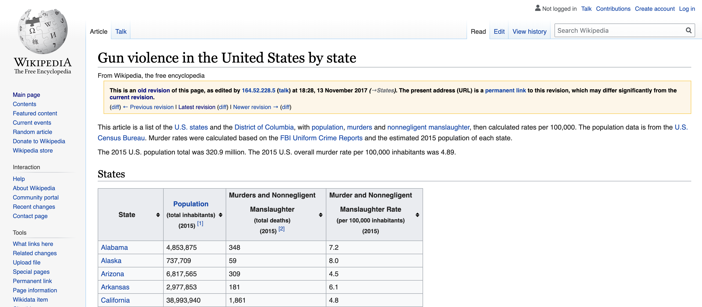

datsci_06: Wrangling
Introduction and Welcome!

Usage: This tutorial accompanies the textbook Introduction to Data Science by Prof Rafael Irizarry. It contains material from the textbook which is offered under a Attribution-NonCommercial-ShareAlike 4.0 International (CC BY-NC-SA 4.0).
Welcome to Data Science: Wrangling!
We’re excited to have you join us in this course, which is designed to teach you data wrangling, the process of converting raw data to the formats needed for further analysis.
This is the sixth in a series of courses in the Introduction to Data Science program, a series of courses that prepare you to do data analysis in , from simple computations to machine learning. We assume that you have taken the preceding five courses in the series or have equivalent knowledge of R programming. We recommend that you complete the first five courses in the series (Data Science: Basics (datsci_01), Data Science: Visualization (datsci_02), Data Science: Probability (datsci_03), Data Science: Inference and Modeling (datsci_04), and Data Science: Productivity Tools (datsci_05)) before taking this course.
Using a combination of guided introduction lectures and more independent in-depth exploration, you will get to practice your new skills on real-life applications.
In this course, we cover several standard steps of the data wrangling process like importing data into , tidying data, string processing, HTML parsing, working with dates and times, and text mining. Rarely are all these wrangling steps necessary in a single analysis, but a data scientist will likely face them all at some point.
In a data science project, data are often not easily accessible. It’s more likely for the data to be in a file, a database, or extracted from documents such as web pages, tweets, or PDFs. In these cases, the first step is to import the data into and tidy the data, using the tidyverse package. The steps that convert data from its raw form to the tidy form are called data wrangling.
The class notes for this course series can be found in Professor Irizarry’s freely available Introduction to Data Science. The textbook is also freely available in PDF format on Leanpub. This course corresponds to textbook Chapter 20 through Chapter 26.
In this course, you will learn:
How to import data into from different file formats
How to scrape data from the web
How to tidy data using the tidyverse to better facilitate analysis
How to process strings with regular expressions (regex)
How to wrangle data using dplyr
How to work with dates and times as file formats
How to mine text
Course overview
Section 1: Data Import
- You will learn how to import data from different sources.
Section 2: Tidy Data
- You will learn the first pieces of converting data into a tidy format.
Section 3: String Processing
- You will learn how to process strings using regular expressions (regex).
Section 4: Dates, Times, and Text Mining
- You will learn how to work with dates and times as file formats and how to mine text.
Course Instructor

Fatih Uenal is currenlty a Visitng Postdoctoral Researcher at the University of Cambridge, Department of Psychology, where he conducts research on the psychology of anthropocentrism and social and ecological dominance. Prior to his current position, he has worked as a postdoc at Harvard University. Together with Prof Rafael Irizarry he programmed this interactive tutorial based on the the textbook Introduction to Data Science. This interactive tutorial is developed using the learnr package. It has a general social scientists audience in mind and is suited for undergrad and graduate levels of study.
Essential Course Information
Course Objectives
“Data science” is a catch-all term used to describe the practice of working with and analyzing messy data sources to draw meaningful conclusions using techniques developed by computer scientists and computational statisticians. The purpose of this course is to give students who are training as quantitative social scientists a broad introduction to this skillset via the statistical programming language, . You will learn how to conduct many statistical analyses such as univariate statistics (e.g., ANOVA, correlation, regression) in that you may have already done in SPSS, Excel, or another such program. Additionally, we will build on this foundation to explore new skillsets uncommon in the social sciences, such as natural language processing, automated data curation, and machine learning.
At the end of this course you will be able to:
To answer research questions in Social Sciences (e.g., Psychology) with data
Understand the basics of research designs in Social Sciences, and how they relate to data-analysis strategies
Develop an intuitive, practical, and conceptual understanding of strategies for asking and answering questions with data
To use , a free and open-source statistics software program.
Develop a basic understanding of frequently used Data Science Techniques.
Practice your newly acquired skills with interesting, interactive, and fun projects.
NOTE: The schedule and procedures described in this syllabus are subject to change depending on specific needs and requirements. You will always be notified of changes on the homepage (see “last update”).
Course Structure
This is the first module in a series of a 8 week-intensive course. and I suggest that you devote approx 10 hours a week to learning , or if you are teaching graduate students, I’d recommend adopting the schedule below, which is designed for an intense but doable semester-long course, one module per week. It is intended to take the average graduate student roughly 10 hours per week to complete all required tasks.However, some number of students will find programming to be more challenging and may take up to 15 hours per week. Some will breeze through the material in 5.
Grading
Each Monday, lessons will be assigned from datacamp.com. Some of these lessons will be complete DataCamp courses, and others will be specific modules of courses. This will all be managed by assigning content to your (free) DataCamp account. The amount of content assigned will vary between one and two courses of content. DataCamp considers a course to be roughly 4 hours of lessons, which includes practice time. Realistically, the time you need will depend upon how intuitive you find to be. For students already familiar with other programming languages and those with previous experience, “8 hours” of courses is realistically closer to 2 hours; for complete novices that also find the material difficult, 8 hours is a realistic estimate. It is strongly recommended that you stretch out DataCamp lessons across the assignment period, for example, allocating 1 hour each day. You will gain the most by treating this as a foreign language immersion course by using R every day, including for your own research. Remember that you can always go to the Slack Group for help.
Passing Rate
The passing rate is 70%.
Pre-Course Survey
Insert Survey Link here
If you cannot see the survey above, click this link to access it in a new window.
Section 1: Data Import
In the Data Import section, you will learn how import data into .
After completing this section, you will be able to:
Import data from spreadsheets.
Identify and set your working directory and specify the path to a file.
Use the readr and readxl packages to import spreadsheets.
Use R-base functions to import spreadsheets.
Download files from the internet using .
There is a comprehension check at the end of the section.
We encourage you to use to interactively test out your answers and further your own learning.
Introduction to Wrangling
Textbook link The content is discussed within the textbook section - 20 Introduction to data wrangling.
The datasets used in this course have been made available to you as R objects, specifically as data frames. The US murders data, the reported heights data, and the Gapminder data were all data frames. These datasets come included in the dslabs package and we loaded them using the data function. Furthermore, we have made the data available in what is referred to as tidy form. The tidyverse packages and functions assume that the data is tidy and this assumption is a big part of the reason these packages work so well together.
However, very rarely in a data science project is data easily available as part of a package. We did quite a bit of work “behind the scenes” to get the original raw data into the tidy tables you worked with. Much more typical is for the data to be in a file, a database, or extracted from a document, including web pages, tweets, or PDFs. In these cases, the first step is to import the data into R and, when using the tidyverse, tidy the data. This initial step in the data analysis process usually involves several, often complicated, steps to convert data from its raw form to the tidy form that greatly facilitates the rest of the analysis. We refer to this process as data wrangling.
Here we cover several common steps of the data wrangling process including tidying data, string processing, html parsing, working with dates and times, and text mining. Rarely are all these wrangling steps necessary in a single analysis, but data scientists will likely face them all at some point. Some of the examples we use to demonstrate data wrangling techniques are based on the work we did to convert raw data into the tidy datasets provided by the dslabs package and used in the textbook as examples.
Key points:
The first step in data analysis is importing, tidying and cleaning the data. This is the process of data wrangling.
In this course, we cover several common steps of the data wrangling process: tidying data, string processing, html parsing, working with dates and times, and text mining.
Importing Spreadsheets
Textbook link The content is discussed within the textbook section - 5 Importing data.
We have been using data sets already stored as R objects. A data scientist will rarely have such luck and will have to import data into R from either a file, a database, or other sources. Currently, one of the most common ways of storing and sharing data for analysis is through electronic spreadsheets. A spreadsheet stores data in rows and columns. It is basically a file version of a data frame. When saving such a table to a computer file, one needs a way to define when a new row or column ends and the other begins. This in turn defines the cells in which single values are stored.
When creating spreadsheets with text files, like the ones created with a simple text editor, a new row is defined with return and columns are separated with some predefined special character. The most common characters are comma (,), semicolon (;), space ( ), and tab (a preset number of spaces or \t). Here is an example of what a comma separated file looks like if we open it with a basic text editor:
The first row contains column names rather than data. We call this a header, and when we read-in data from a spreadsheet it is important to know if the file has a header or not. Most reading functions assume there is a header. To know if the file has a header, it helps to look at the file before trying to read it. This can be done with a text editor or with RStudio. In RStudio, we can do this by either opening the file in the editor or navigating to the file location, double clicking on the file, and hitting View File.
However, not all spreadsheet files are in a text format. Google Sheets, which are rendered on a browser, are an example. Another example is the proprietary format used by Microsoft Excel. These can’t be viewed with a text editor. Despite this, due to the widespread use of Microsoft Excel software, this format is widely used.
We start this section by describing the difference between text (ASCII), Unicode, and binary files and how this affects how we import them. We then explain the concepts of file paths and working directories, which are essential to understand how to import data effectively. We then introduce the readr and readxl package and the functions that are available to import spreadsheets into R. Finally, we provide some recommendations on how to store and organize data in files. More complex challenges such as extracting data from web pages or PDF documents are left for the Data Wrangling part of the textbook.
Key points:
Many datasets are stored in spreadsheets. A spreadsheet is essentially a file version of a data frame with rows and columns.
Spreadsheets have rows separated by returns and columns separated by a delimiter. The most common delimiters are comma, semicolon, white space and tab.
Many spreadsheets are raw text files and can be read with any basic text editor. However, some formats are proprietary and cannot be read with a text editor, such as Microsoft Excel files (.xls).
Most import functions assume that the first row of a spreadsheet file is a header with column names. To know if the file has a header, it helps to look at the file with a text editor before trying to import it.
Paths and the Working Directory
Textbook link The content is discussed within the textbook section - 5.1 Paths and the working directory.
The first step when importing data from a spreadsheet is to locate the file containing the data. Although we do not recommend it, you can use an approach similar to what you do to open files in Microsoft Excel by clicking on the RStudio “File” menu, clicking “Import Dataset”, then clicking through folders until you find the file. We want to be able to write code rather than use the point-and-click approach. The keys and concepts we need to learn to do this are described in detail in the Productivity Tools part of this textbook. Here we provide an overview of the very basics.
The main challenge in this first step is that we need to let the R functions doing the importing know where to look for the file containing the data. The simplest way to do this is to have a copy of the file in the folder in which the importing functions look by default. Once we do this, all we have to supply to the importing function is the filename.
A spreadsheet containing the US murders data is included as part of the dslabs package. Finding this file is not straightforward, but the following lines of code copy the file to the folder in which R looks in by default. We explain how these lines work below.
filename <- "murders.csv"
dir <- system.file("extdata", package = "dslabs")
fullpath <- file.path(dir, filename)
file.copy(fullpath, "murders.csv")This code does not read the data into R, it just copies a file. But once the file is copied, we can import the data with a simple line of code. Here we use the read_csv function from the readr package, which is part of the tidyverse.
library(tidyverse)
dat <- read_csv(filename)The data is imported and stored in dat. The rest of this section defines some important concepts and provides an overview of how we write code that tells R how to find the files we want to import. The textbook (Section - 38 Organizing with Unix) provides more details on this topic.
The filesystem
You can think of your computer’s filesystem as a series of nested folders, each containing other folders and files. Data scientists refer to folders as directories. We refer to the folder that contains all other folders as the root directory. We refer to the directory in which we are currently located as the working directory. The working directory therefore changes as you move through folders: think of it as your current location.
Relative and full paths
The path of a file is a list of directory names that can be thought of as instructions on what folders to click on, and in what order, to find the file. If these instructions are for finding the file from the root directory we refer to it as the full path. If the instructions are for finding the file starting in the working directory we refer to it as a relative path. The textbook (Section - 38.3 The filesystem) provides more details on this topic.
To see an example of a full path on your system type the following:
system.file(package = "dslabs")The strings separated by slashes are the directory names. The first slash represents the root directory and we know this is a full path because it starts with a slash. If the first directory name appears without a slash in front, then the path is assumed to be relative. We can use the function list.files to see examples of relative paths.
dir <- system.file(package = "dslabs")
list.files(path = dir)## [1] "data" "DESCRIPTION" "extdata" "help" "html"
## [6] "INDEX" "Meta" "NAMESPACE" "R" "script"These relative paths give us the location of the files or directories if we start in the directory with the full path. For example, the full path to the help directory in the example above is /Library/Frameworks/R.framework/Versions/3.5/Resources/library/dslabs/help.
Note: You will probably not make much use of the system.file function in your day-to-day data analysis work. We introduce it in this section because it facilitates the sharing of spreadsheets by including them in the dslabs package. You will rarely have the luxury of data being included in packages you already have installed. However, you will frequently need to navigate full and relative paths and import spreadsheet formatted data.
The working directory
We highly recommend only writing relative paths in your code. The reason is that full paths are unique to your computer and you want your code to be portable. You can get the full path of your working directory without writing out explicitly by using the getwd function.
wd <- getwd()If you need to change your working directory, you can use the function setwd or you can change it through RStudio by clicking on “Session”.
Generating path names
Another example of obtaining a full path without writing out explicitly was given above when we created the object fullpath like this:
filename <- "murders.csv"
dir <- system.file("extdata", package = "dslabs")
fullpath <- file.path(dir, filename)The function system.file provides the full path of the folder containing all the files and directories relevant to the package specified by the package argument. By exploring the directories in dir we find that the extdata contains the file we want:
dir <- system.file(package = "dslabs")
filename %in% list.files(file.path(dir, "extdata")) ## [1] TRUEThe system.file function permits us to provide a subdirectory as a first argument, so we can obtain the fullpath of the extdata directory like this:
dir <- system.file("extdata", package = "dslabs") The function file.path is used to combine directory names to produce the full path of the file we want to import.
fullpath <- file.path(dir, filename)Copying files using paths
The final line of code we used to copy the file into our home directory used
the function file.copy. This function takes two arguments: the file to copy and the name to give it in the new directory.
file.copy(fullpath, "murders.csv")## [1] FALSEIf a file is copied successfully, the file.copy function returns TRUE. Note that we are giving the file the same name, murders.csv, but we could have named it anything. Also note that by not starting the string with a slash, R assumes this is a relative path and copies the file to the working directory.
You should be able to see the file in your working directory and can check by using:
list.files()
Key points:
The working directory is where looks for files and saves files by default.
See your working directory with
getwd(). Change your working directory withsetwd().We suggest you create a directory for each project and keep your raw data inside that directory.
Use the
file.path()function to generate a full path from a relative path and a file name. Usefile.path()instead ofpaste()becausefile.path()is aware of your operating system and will use the correct slashes to navigate your machine.The
file.copy()function copies a file to a new path.
The readr and readxl Packages
Textbook link The content is discussed within the textbook section - 5.2 The readr and readxl packages.
In this section we introduce the main tidyverse data importing functions. We will use the murders.csv file provided by the dslabs package as an example. To simplify the illustration we will copy the file to our working directory using the following code:
filename <- "murders.csv"
dir <- system.file("extdata", package = "dslabs")
fullpath <- file.path(dir, filename)
file.copy(fullpath, "murders.csv")readr
The readr library includes functions for reading data stored in text file spreadsheets into R. readr is part of the tidyverse package, or you can load it directly:
library(readr)The following functions are available to read-in spreadsheets:
| Function | Format | Typical suffix |
|---|---|---|
| read_table | white space separated values | txt |
| read_csv | comma separated values | csv |
| read_csv2 | semicolon separated values | csv |
| read_tsv | tab delimited separated values | tsv |
| read_delim | general text file format, must define delimiter | txt |
Although the suffix usually tells us what type of file it is, there is no guarantee that these always match. We can open the file to take a look or use the function read_lines to look at a few lines:
read_lines("murders.csv", n_max = 3)## [1] "state,abb,region,population,total" "Alabama,AL,South,4779736,135"
## [3] "Alaska,AK,West,710231,19"This also shows that there is a header. Now we are ready to read-in the data into R. From the .csv suffix and the peek at the file, we know to use read_csv:
dat <- read_csv(filename)Note that we receive a message letting us know what data types were used for each column. Also note that dat is a tibble, not just a data frame. This is because read_csv is a tidyverse parser. We can confirm that the data has in fact been read-in with:
View(dat)Finally, note that we can also use the full path for the file:
dat <- read_csv(fullpath)readxl
You can load the readxl package using
library(readxl)The package provides functions to read-in Microsoft Excel formats:
| Function | Format | Typical suffix |
|---|---|---|
| read_excel | auto detect the format | xls, xlsx |
| read_xls | original format | xls |
| read_xlsx | new format | xlsx |
The Microsoft Excel formats permit you to have more than one spreadsheet in one file. These are referred to as sheets. The functions listed above read the first sheet by default, but we can also read the others. The excel_sheets function gives us the names of all the sheets in an Excel file. These names can then be passed to the sheet argument in the three functions above to read sheets other than the first.
Exercises
1. Use the read_csv function to read each of the files that the following code saves in the files object:
path <- system.file("extdata", package = "dslabs")
files <- list.files(path)
files2. Note that the last one, the olive file, gives us a warning. This is because the first line of the file is missing the header for the first column.
Read the help file for read_csv to figure out how to read in the file without reading this header. If you skip the header, you should not get this warning. Save the result to an object called dat.
3. A problem with the previous approach is that we don’t know what the columns represent. Type:
names(dat)to see that the names are not informative.
Use the readLines function to read in just the first line (we later learn how to extract values from the output).
Key points:
readr is the tidyverse library that includes functions for reading data stored in text file spreadsheets into . Functions in the package include
read_csv(),read_tsv(),read_delim()and more.These differ by the delimiter they use to split columns.
The readxl package provides functions to read Microsoft Excel formatted files.
The
excel_sheets()function gives the names of the sheets in the Excel file. These names are passed to the sheet argument for the readxl functionsread_excel(),read_xls()andread_xlsx().The
read_lines()function shows the first few lines of a file in .
Importing Data Using R-base Functions
Textbook link The content is discussed within the textbook section - 5.5 R-base importing functions.
R-base also provides import functions. These have similar names to those in the tidyverse, for example read.table, read.csv and read.delim. However, there are a couple of important differences. To show this we read-in the data with an R-base function:
dat2 <- read.csv(filename)An important difference is that the characters are converted to factors:
class(dat2$abb)## [1] "character"class(dat2$region)## [1] "character"This can be avoided by setting the argument stringsAsFactors to FALSE.
dat <- read.csv("murders.csv", stringsAsFactors = FALSE)
class(dat$state)## [1] "character"In our experience this can be a cause for confusion since a variable that was saved as characters in file is converted to factors regardless of what the variable represents. In fact, we highly recommend setting stringsAsFactors=FALSE to be your default approach when using the R-base parsers. You can easily convert the desired columns to factors after importing data.
Key points:
- R-base import functions (
read.csv(),read.table(),read.delim()) generate data frames rather than tibbles and character variables are converted to factors. This can be avoided by setting the argument stringsAsFactors=FALSE.
Downloading Files from the Internet
Textbook link The content is discussed within the textbook section - 5.4 Downloading files.
Another common place for data to reside is on the internet. When these data are in files, we can download them and then import them or even read them directly from the web. For example, we note that because our dslabs package is on GitHub, the file we downloaded with the package has a url:
url <- "https://raw.githubusercontent.com/rafalab/dslabs/master/inst/
extdata/murders.csv"The read_csv file can read these files directly:
dat <- read_csv(url)If you want to have a local copy of the file, you can use the download.file function:
download.file(url, "murders.csv")This will download the file and save it on your system with the name murders.csv. You can use any name here, not necessarily murders.csv. Note that when using download.file you should be careful as it will overwrite existing files without warning.
Two functions that are sometimes useful when downloading data from the internet are tempdir and tempfile. The first creates a directory with a random name that is very likely to be unique. Similarly, tempfile creates a character string, not a file, that is likely to be a unique filename. So you can run a command like this which erases the temporary file once it imports the data:
tmp_filename <- tempfile()
download.file(url, tmp_filename)
dat <- read_csv(tmp_filename)
file.remove(tmp_filename)
Key points:
The
read_csv()function and other import functions can read a URL directly.If you want to have a local copy of the file, you can use
download.file().tempdir()creates a directory with a name that is very unlikely not to be unique.tempfile()creates a character string that is likely to be a unique filename.
Assessment Part 1: Data Import
Insert Assessment here
Assessment Part 2: Data Import
Insert Assessment here
Section 2: Tidy Data
In the Tidy Data section, you will learn how to convert data from a raw to a tidy format.
This section is divided into three parts: Reshaping Data, Combining Tables, and Web Scraping. There are comprehension checks at the end of each part.
After completing the Tidy Data section, you will be able to:
Reshape data using functions from the tidyr package, including
gather(),spread(),separate()andunite().Combine information from different tables using join functions from the dplyr package.
Combine information from different tables using binding functions from the dplyr package.
Use set operators to combine data frames.
Gather data from a website through web scraping and use of CSS selectors.
We encourage you to use to interactively test out your answers and further your own learning.
Tidy Data
Textbook link The content is discussed within the textbook section - 4 The tidyverse.
Up to now we have been manipulating vectors by reordering and subsetting them through indexing. However, once we start more advanced analyses, the preferred unit for data storage is not the vector but the data frame. In this section we learn to work directly with data frames, which greatly facilitate the organization of information. We will be using data frames for the majority of this textbook. We will focus on a specific data format referred to as tidy and on specific collection of packages that are particularly helpful for working with tidy data referred to as the tidyverse.
We can load all the tidyverse packages at once by installing and loading the tidyverse package:
library(tidyverse)We will learn how to implement the tidyverse approach throughout the course, but before delving into the details, in this section we introduce some of the most widely used tidyverse functionality, starting with the dplyr package for manipulating data frames and the purrr package for working with functions. Note that the tidyverse also includes a graphing package, ggplot2, which we introduce later in the textbook (Section - 7 ggplot2) in the Data Visualization part of the textbook; the readr package discussed in the textbook (Section - 5 Importing data); and many others. In this section, we first introduce the concept of tidy data and then demonstrate how we use the tidyverse to work with data frames in this format.
Tidy data
We say that a data table is in tidy format if each row represents one observation and columns represent the different variables available for each of these observations. The murders dataset is an example of a tidy data frame.
Each row represent a state with each of the five columns providing a different variable related to these states: name, abbreviation, region, population, and total murders.
To see how the same information can be provided in different formats, consider the following example:
This tidy dataset provides fertility rates for two countries across the years. This is a tidy dataset because each row presents one observation with the three variables being country, year, and fertility rate. However, this dataset originally came in another format and was reshaped for the dslabs package. Originally, the data was in the following format:
The same information is provided, but there are two important differences in the format: 1) each row includes several observations and 2) one of the variables, year, is stored in the header. For the tidyverse packages to be optimally used, data need to be reshaped into tidy format, which you will learn to do in the Data Wrangling part of the course Until then, we will use example datasets that are already in tidy format.
Although not immediately obvious, as you go through the course you will start to appreciate the advantages of working in a framework in which functions use tidy formats for both inputs and outputs. You will see how this permits the data analyst to focus on more important aspects of the analysis rather than the format of the data.
Key points:
In tidy data, each row represents an observation and each column represents a different variable.
In wide data, each row includes several observations and one of the variables is stored in the header.
Reshaping Data
Textbook link The content is discussed within the textbook section - 21. Reshaping data, the textbook section - 21.1 gather, and the textbook section - 21.2 spread.
As we have seen through the course, having data in tidy format is what makes the tidyverse flow. After the first step in the data analysis process, importing data, a common next step is to reshape the data into a form that facilitates the rest of the analysis. The tidyr package includes several functions that are useful for tidying data.
We will use the fertility wide format dataset described in the textbook (Section - 4.1 Tidy data) as an example in this section.
library(tidyverse)
library(dslabs)
path <- system.file("extdata", package="dslabs")
filename <- file.path(path, "fertility-two-countries-example.csv")
wide_data <- read_csv(filename)gather
One of the most used functions in the tidyr package is gather, which is useful for converting wide data into tidy data.
As with most tidyverse functions, the gather function’s first argument is the data frame that will be converted. Here we want to reshape the wide_data dataset so that each row represents a fertility observation, which implies we need three columns to store the year, country, and the observed value. In its current form, data from different years are in different columns with the year values stored in the column names. Through the second and third argument we will tell gather the column names we want to assign to the columns containing the current column names and observations, respectively. In this case a good choice for these two arguments would be year and fertility. Note that nowhere in the data file does it tell us this is fertility data. Instead, we deciphered this from the file name. Through the fourth argument we specify the columns containing observed values; these are the columns that will be gathered. The default is to gather all columns so, in most cases, we have to specify the columns. In our example we want columns 1960, 1961 up to 2015.
The code to gather the fertility data therefore looks like this:
new_tidy_data <- gather(wide_data, year, fertility, `1960`:`2015`)We can also use the pipe like this:
new_tidy_data <- wide_data %>% gather(year, fertility, `1960`:`2015`)We can see that the data have been converted to tidy format with columns year and fertility:
head(new_tidy_data)and that each year resulted in two rows since we have two countries and this column was not gathered. A somewhat quicker way to write this code is to specify which column will not be gathered, rather than all the columns that will be gathered:
new_tidy_data <- wide_data %>%
gather(year, fertility, -country)The new_tidy_data object looks like the original tidy_data we defined this way
data("gapminder")
tidy_data <- gapminder %>%
filter(country %in% c("South Korea", "Germany") & !is.na(fertility)) %>%
select(country, year, fertility)with just one minor difference. Can you spot it? Look at the data type of the year column:
class(tidy_data$year)## [1] "integer"class(new_tidy_data$year)## [1] "character"The gather function assumes that column names are characters. So we need a bit more wrangling before we are ready to make a plot. We need to convert the year column to be numbers. The gather function includes the convert argument for this purpose:
new_tidy_data <- wide_data %>%
gather(year, fertility, -country, convert = TRUE)
class(new_tidy_data$year)## [1] "integer"Note that we could have also used the mutate and as.numeric.
Now that the data is tidy, we can use this relatively simple ggplot code:
new_tidy_data %>% ggplot(aes(year, fertility, color = country)) +
geom_point()spread
As we will see in later examples, it is sometimes useful for data wrangling purposes to convert tidy data into wide data. We often use this as an intermediate step in tidying up data. The spread function is basically the inverse of gather. The first argument is for the data, but since we are using the pipe, we don’t show it. The second argument tells spread which variable will be used as the column names. The third argument specifies which variable to use to fill out the cells:
new_wide_data <- new_tidy_data %>% spread(year, fertility)
select(new_wide_data, country, `1960`:`1967`)The following diagram can help remind you how these two functions work:

(Image courtesy of RStudio. CC-BY-4.0 license. Cropped from original.)
Key points:
The tidyr package includes several functions that are useful for tidying data.
The
gather()function converts wide data into tidy data.The
spread()function converts tidy data to wide data.
Separate and Unite
Textbook link The content is discussed within the textbook section - 21.3 separate, and the textbook section - 21.4 unite.
The data wrangling shown above was simple compared to what is usually required. In our example spreadsheet files, we include an illustration that is slightly more complicated. It contains two variables: life expectancy and fertility. However, the way it is stored is not tidy and, as we will explain, not optimal.
path <- system.file("extdata", package = "dslabs")
filename <- "life-expectancy-and-fertility-two-countries-example.csv"
filename <- file.path(path, filename)
raw_dat <- read_csv(filename)
select(raw_dat, 1:5)First, note that the data is in wide format. Second, notice that this table includes values for two variables, fertility and life expectancy, with the column name encoding which column represents which variable. Encoding information in the column names is not recommended but, unfortunately, it is quite common. We will put our wrangling skills to work to extract this information and store it in a tidy fashion.
We can start the data wrangling with the gather function, but we should no longer use the column name year for the new column since it also contains the variable type. We will call it key, the default, for now:
dat <- raw_dat %>% gather(key, value, -country)
head(dat)The result is not exactly what we refer to as tidy since each observation is associated with two, not one, rows. We want to have the values from the two variables, fertility and life expectancy, in two separate columns. The first challenge to achieve this is to separate the key column into the year and the variable type. Notice that the entries in this column separate the year from the variable name with an underscore:
dat$key[1:5]## [1] "1960_fertility" "1960_fertility" "1960_life_expectancy"
## [4] "1960_life_expectancy" "1961_fertility"Encoding multiple variables in a column name is such a common problem that the readr package includes a function to separate these columns into two or more. Apart from the data, the separate function takes three arguments: the name of the column to be separated, the names to be used for the new columns, and the character that separates the variables. So, a first attempt at this is:
dat %>% separate(key, c("year", "variable_name"), "_")Because _ is the default separator assumed by separate, we do not have to include it in the code:
dat %>% separate(key, c("year", "variable_name"))The function does separate the values, but we run into a new problem. We receive the warning Too many values at 112 locations: and that the life_expectancy variable is truncated to life. This is because the _ is used to separate life and expectancy, not just year and variable name! We could add a third column to catch this and let the separate function know which column to fill in with missing values, NA, when there is no third value. Here we tell it to fill the column on the right:
var_names <- c("year", "first_variable_name", "second_variable_name")
dat %>% separate(key, var_names, fill = "right")However, if we read the separate help file, we find that a better approach is to merge the last two variables when there is an extra separation:
dat %>% separate(key, c("year", "variable_name"), extra = "merge")This achieves the separation we wanted. However, we are not done yet. We need to create a column for each variable. As we learned, the spread function can do this:
dat %>%
separate(key, c("year", "variable_name"), extra = "merge") %>%
spread(variable_name, value) The data is now in tidy format with one row for each observation with three variables: year, fertility, and life expectancy.
unite
It is sometimes useful to do the inverse of separate, unite two columns into one. To demonstrate how to use unite, we show code that, although not the optimal approach, serves as an illustration. Suppose that we did not know about extra and used this command to separate:
dat %>%
separate(key, var_names, fill = "right")We can achieve the same final result by uniting the second and third columns, then spreading the columns and renaming fertility_NA to fertility:
dat %>%
separate(key, var_names, fill = "right") %>%
unite(variable_name, first_variable_name, second_variable_name) %>%
spread(variable_name, value) %>%
rename(fertility = fertility_NA)
Key points:
The
separate()function splits one column into two or more columns at a specified character that separates the variables.When there is an extra separation in some of the entries, use fill=“right” to pad missing values with NAs, or use extra=“merge” to keep extra elements together.
The
unite()function combines two columns and adds a separating character.
2.1 Assessment Part 1: Reshaping Data
Insert Assessment here
2.2 Assessment Part 1: Reshaping Data
Insert Assessment here
Combining Tables
Textbook link The content is discussed within the textbook section - 22 Joining tables.
The information we need for a given analysis may not be just in one table. For example, when forecasting elections we used the function left_join to combine the information from two tables. Here we use a simpler example to illustrate the general challenge of combining tables.
Suppose we want to explore the relationship between population size for US states and electoral votes. We have the population size in this table:
library(tidyverse)
library(dslabs)
data(murders)
head(murders)and electoral votes in this one:
data(polls_us_election_2016)
head(results_us_election_2016)Just concatenating these two tables together will not work since the order of the states is not the same.
identical(results_us_election_2016$state, murders$state)## [1] FALSEThe join functions, described below, are designed to handle this challenge.
Joins
The join functions in the dplyr package make sure that the tables are combined so that matching rows are together. If you know SQL, you will see that the approach and syntax is very similar. The general idea is that one needs to identify one or more columns that will serve to match the two tables. Then a new table with the combined information is returned. Notice what happens if we join the two tables above by state using left_join (we will remove the others column and rename electoral_votes so that the tables fit on the page):
tab <- left_join(murders, results_us_election_2016, by = "state") %>%
select(-others) %>% rename(ev = electoral_votes)
head(tab)The data has been successfully joined and we can now, for example, make a plot to explore the relationship:
library(ggrepel)
tab %>% ggplot(aes(population/10^6, ev, label = abb)) +
geom_point() +
geom_text_repel() +
scale_x_continuous(trans = "log2") +
scale_y_continuous(trans = "log2") +
geom_smooth(method = "lm", se = FALSE)We see the relationship is close to linear with about 2 electoral votes for every million persons, but with very small states getting higher ratios.
In practice, it is not always the case that each row in one table has a matching row in the other. For this reason, we have several versions of join. To illustrate this challenge, we will take subsets of the tables above. We create the tables tab1 and tab2 so that they have some states in common but not all:
tab_1 <- slice(murders, 1:6) %>% select(state, population)
tab_1tab_2 <- results_us_election_2016 %>%
filter(state%in%c("Alabama", "Alaska", "Arizona",
"California", "Connecticut", "Delaware")) %>%
select(state, electoral_votes) %>% rename(ev = electoral_votes)
tab_2We will use these two tables as examples in the next sections.
Left join
Suppose we want a table like tab_1, but adding electoral votes to whatever states we have available. For this, we use left_join with tab_1 as the first argument. We specify which column to use to match with the by argument.
left_join(tab_1, tab_2, by = "state")Note that NAs are added to the two states not appearing in tab_2. Also, notice that this function, as well as all the other joins, can receive the first arguments through the pipe:
tab_1 %>% left_join(tab_2, by = "state")Right join
If instead of a table with the same rows as first table, we want one with the same rows as second table, we can use right_join:
tab_1 %>% right_join(tab_2, by = "state")Now the NAs are in the column coming from tab_1.
Inner join
If we want to keep only the rows that have information in both tables, we use inner_join. You can think of this as an intersection:
inner_join(tab_1, tab_2, by = "state")Full join
If we want to keep all the rows and fill the missing parts with NAs, we can use full_join. You can think of this as a union:
full_join(tab_1, tab_2, by = "state")Semi join
The semi_join function lets us keep the part of first table for which we have information in the second. It does not add the columns of the second:
semi_join(tab_1, tab_2, by = "state")Anti join
The function anti_join is the opposite of semi_join. It keeps the elements of the first table for which there is no information in the second:
anti_join(tab_1, tab_2, by = "state")The following diagram summarizes the above joins:
 (Image courtesy of RStudio. CC-BY-4.0 license. Cropped from original.)
(Image courtesy of RStudio. CC-BY-4.0 license. Cropped from original.)
Key points:
The join functions in the dplyr package combine two tables such that matching rows are together.
left_join()only keeps rows that have information in the first table.right_join()only keeps rows that have information in the second table.inner_join()only keeps rows that have information in both tables.full_join()keeps all rows from both tables.semi_join()keeps the part of first table for which we have information in the second.anti_join()keeps the elements of the first table for which there is no information in the second.
Binding
Textbook link The content is discussed within the textbook section - 22.2 Binding.
Although we have yet to use it in this course, another common way in which datasets are combined is by binding them. Unlike the join function, the binding functions do not try to match by a variable, but instead simply combine datasets. If the datasets don’t match by the appropriate dimensions, one obtains an error.
Binding columns
The dplyr function bind_cols binds two objects by making them columns in a tibble. For example, we quickly want to make a data frame consisting of numbers we can use.
bind_cols(a = 1:3, b = 4:6)This function requires that we assign names to the columns. Here we chose a and b.
Note that there is an R-base function cbind with the exact same functionality. An important difference is that cbind can create different types of objects, while bind_cols always produces a data frame.
bind_cols can also bind two different data frames. For example, here we break up the tab data frame and then bind them back together:
tab_1 <- tab[, 1:3]
tab_2 <- tab[, 4:6]
tab_3 <- tab[, 7:8]
new_tab <- bind_cols(tab_1, tab_2, tab_3)
head(new_tab)Binding by rows
The bind_rows function is similar to bind_cols, but binds rows instead of columns:
tab_1 <- tab[1:2,]
tab_2 <- tab[3:4,]
bind_rows(tab_1, tab_2)This is based on an R-base function rbind.
Key points:
Unlike the join functions, the binding functions do not try to match by a variable, but rather just combine datasets.
bind_cols()binds two objects by making them columns in a tibble. The R-base functioncbind()binds columns but makes a data frame or matrix instead.The
bind_rows()function is similar but binds rows instead of columns. The R-base functionrbind()binds rows but makes a data frame or matrix instead.
Set Operators
Textbook link The content is discussed within the textbook section - 22.3 Set operators.
Another set of commands useful for combining datasets are the set operators. When applied to vectors, these behave as their names suggest. Examples are intersect, union, setdiff, and setequal. However, if the tidyverse, or more specifically dplyr, is loaded, these functions can be used on data frames as opposed to just on vectors.
Intersect
You can take intersections of vectors of any type, such as numeric:
intersect(1:10, 6:15)## [1] 6 7 8 9 10or characters:
intersect(c("a","b","c"), c("b","c","d"))## [1] "b" "c"The dplyr package includes an intersect function that can be applied to tables with the same column names. This function returns the rows in common between two tables. To make sure we use the dplyr version of intersect rather than the base package version, we can use dplyr::intersect like this:
tab_1 <- tab[1:5,]
tab_2 <- tab[3:7,]
dplyr::intersect(tab_1, tab_2)Union
Similarly union takes the union of vectors. For example:
union(1:10, 6:15)## [1] 1 2 3 4 5 6 7 8 9 10 11 12 13 14 15union(c("a","b","c"), c("b","c","d"))## [1] "a" "b" "c" "d"The dplyr package includes a version of union that combines all the rows of two tables with the same column names.
tab_1 <- tab[1:5,]
tab_2 <- tab[3:7,]
dplyr::union(tab_1, tab_2) setdiff
The set difference between a first and second argument can be obtained with setdiff. Unlike intersect and union, this function is not symmetric:
setdiff(1:10, 6:15)## [1] 1 2 3 4 5setdiff(6:15, 1:10)## [1] 11 12 13 14 15As with the functions shown above, dplyr has a version for data frames:
tab_1 <- tab[1:5,]
tab_2 <- tab[3:7,]
dplyr::setdiff(tab_1, tab_2)setequal
Finally, the function setequal tells us if two sets are the same, regardless of order. So notice that:
setequal(1:5, 1:6)## [1] FALSEbut:
setequal(1:5, 5:1)## [1] TRUEWhen applied to data frames that are not equal, regardless of order, the dplyr version provides a useful message letting us know how the sets are different:
dplyr::setequal(tab_1, tab_2)## [1] FALSE
Key points:
By default, the set operators in R-base work on vectors. If tidyverse/dplyr are loaded, they also work on data frames.
You can take intersections of vectors using
intersect(). This returns the elements common to both sets.You can take the union of vectors using
union(). This returns the elements that are in either set.The set difference between a first and second argument can be obtained with
setdiff(). Note that this function is not symmetric.The function
set_equal()tells us if two sets are the same, regardless of the order of elements.
2.2 Assessment: Combining Tables
Insert Assessment here
Web Scraping
Textbook link The content is discussed within the textbook section - 23 Web scraping through textbook section - 23.2 The rvest package.
The data we need to answer a question is not always in a spreadsheet ready for us to read. For example, the US murders dataset we used in the R Basics section originally comes from this Wikipedia page:
url <- paste0("https://en.wikipedia.org/w/index.php?title=",
"Gun_violence_in_the_United_States_by_state",
"&direction=prev&oldid=810166167")You can see the data table when you visit the webpage:

(Web page courtesy of Wikipedia. CC-BY-SA-3.0 license. Screenshot of part of the page.)
Unfortunately, there is no link to a data file. To make the data frame that is loaded when we type data(murders), we had to do some web scraping.
Web scraping, or web harvesting, is the term we use to describe the process of extracting data from a website. The reason we can do this is because the information used by a browser to render webpages is received as a text file from a server. The text is code written in hyper text markup language (HTML). Every browser has a way to show the html source code for a page, each one different. On Chrome, you can use Control-U on a PC and command+alt+U on a Mac. You will see something like this:

HTML
Because this code is accessible, we can download the HTML file, import it into R, and then write programs to extract the information we need from the page. However, once we look at HTML code, this might seem like a daunting task. But we will show you some convenient tools to facilitate the process. To get an idea of how it works, here are a few lines of code from the Wikipedia page that provides the US murders data:
<table class="wikitable sortable">
<tr>
<th>State</th>
<th><a href="/wiki/List_of_U.S._states_and_territories_by_population"
title="List of U.S. states and territories by population">Population</a><br />
<small>(total inhabitants)</small><br />
<small>(2015)</small> <sup id="cite_ref-1" class="reference">
<a href="#cite_note-1">[1]</a></sup></th>
<th>Murders and Nonnegligent
<p>Manslaughter<br />
<small>(total deaths)</small><br />
<small>(2015)</small> <sup id="cite_ref-2" class="reference">
<a href="#cite_note-2">[2]</a></sup></p>
</th>
<th>Murder and Nonnegligent
<p>Manslaughter Rate<br />
<small>(per 100,000 inhabitants)</small><br />
<small>(2015)</small></p>
</th>
</tr>
<tr>
<td><a href="/wiki/Alabama" title="Alabama">Alabama</a></td>
<td>4,853,875</td>
<td>348</td>
<td>7.2</td>
</tr>
<tr>
<td><a href="/wiki/Alaska" title="Alaska">Alaska</a></td>
<td>737,709</td>
<td>59</td>
<td>8.0</td>
</tr>
<tr>You can actually see the data, except data values are surrounded by html code such as <td>. We can also see a pattern of how it is stored. If you know HTML, you can write programs that leverage knowledge of these patterns to extract what we want. We also take advantage of a language widely used to make webpages look “pretty” called Cascading Style Sheets (CSS). We say more about this in the textbook (Section - 23.3 CSS selectors).
Although we provide tools that make it possible to scrape data without knowing HTML, as a data scientist it is quite useful to learn some HTML and CSS. Not only does this improve your scraping skills, but it might come in handy if you are creating a webpage to showcase your work. There are plenty of online courses and tutorials for learning these. Two examples are Codeacademy and W3schools.
The rvest package
The tidyverse provides a web harvesting package called rvest. The first step using this package is to import the webpage into R. The package makes this quite simple:
library(tidyverse)
library(rvest)
h <- read_html(url)Note that the entire Murders in the US Wikipedia webpage is now contained in h. The class of this object is:
class(h)## [1] "xml_document" "xml_node"The rvest package is actually more general; it handles XML documents. XML is a general markup language (that’s what the ML stands for) that can be used to represent any kind of data. HTML is a specific type of XML specifically developed for representing webpages. Here we focus on HTML documents.
Now, how do we extract the table from the object h? If we print h, we don’t really see much:
h## {html_document}
## <html class="client-nojs" lang="en" dir="ltr">
## [1] <head>\n<meta http-equiv="Content-Type" content="text/html; charset=UTF-8 ...
## [2] <body class="mediawiki ltr sitedir-ltr mw-hide-empty-elt ns-0 ns-subject ...We can see all the code that defines the downloaded webpage using the html_text function like this:
html_text(h)We don’t show the output here because it includes thousands of characters, but if we look at it, we can see the data we are after are stored in an HTML table: you can see this in this line of the HTML code above <table class="wikitable sortable">. The different parts of an HTML document, often defined with a message in between < and > are referred to as nodes. The rvest package includes functions to extract nodes of an HTML document: html_nodes extracts all nodes of different types and html_node extracts the first one. To extract the tables from the html code we use:
tab <- h %>% html_nodes("table")Now, instead of the entire webpage, we just have the html code for the tables in the page:
tab## {xml_nodeset (2)}
## [1] <table class="wikitable sortable"><tbody>\n<tr>\n<th>State\n</th>\n<th>\n ...
## [2] <table class="nowraplinks hlist mw-collapsible mw-collapsed navbox-inner" ...The table we are interested is the first one:
tab[[1]]## {html_node}
## <table class="wikitable sortable">
## [1] <tbody>\n<tr>\n<th>State\n</th>\n<th>\n<a href="/wiki/List_of_U.S._states ...This is clearly not a tidy dataset, not even a data frame. In the code above, you can definitely see a pattern and writing code to extract just the data is very doable. In fact, rvest includes a function just for converting HTML tables into data frames:
tab <- tab[[1]] %>% html_table
class(tab)## [1] "data.frame"We are now much closer to having a usable data table:
tab <- tab %>% setNames(c("state", "population", "total", "murder_rate"))
head(tab)We still have some wrangling to do. For example, we need to remove the commas and turn characters into numbers. Before continuing with this, we will learn a more general approach to extracting information from web sites.
Key points:
Web scraping is extracting data from a website.
The rvest web harvesting package includes functions to extract nodes of an HTML document:
html_nodes()extracts all nodes of different types, andhtml_node()extracts the first node.html_table()converts an HTML table to a data frame.
CSS Selectors
Textbook link This page correnponds to the textbook section - 23.3 CSS selectors
The default look of a webpage made with the most basic HTML is quite unattractive. The aesthetically pleasing pages we see today are made using CSS to define the look and style of webpages. The fact that all pages for a company have the same style usually results from their use of the same CSS file to define the style. The general way these CSS files work is by defining how each of the elements of a webpage will look. The title, headings, itemized lists, tables, and links, for example, each receive their own style including font, color, size, and distance from the margin. CSS does this by leveraging patterns used to define these elements, referred to as selectors. An example of such a pattern, which we used above, is table, but there are many, many more.
If we want to grab data from a webpage and we happen to know a selector that is unique to the part of the page containing this data, we can use the html_nodes function. However, knowing which selector can be quite complicated. In fact, the complexity of webpages has been increasing as they become more sophisticated. For some of the more advanced ones, it seems almost impossible to find the nodes that define a particular piece of data. However, selector gadgets actually make this possible.
SelectorGadget is piece of software that allows you to interactively determine what CSS selector you need to extract specific components from the webpage. If you plan on scraping data other than tables from html pages, we highly recommend you install it. A Chrome extension is available which permits you to turn on the gadget and then, as you click through the page, it highlights parts and shows you the selector you need to extract these parts. There are various demos of how to do this including rvest author [Hadley Wickham’s vignette]/https://cran.r-project.org/web/packages/rvest/vignettes/selectorgadget.html) and other tutorials based on the vignette and here.
There are several other powerful tools provided by rvest. For example, the functions html_form(), set_values(), and submit_form() permit you to query a webpage from . This is a more advanced topic not covered here.
JSON
Sharing data on the internet has become more and more common. Unfortunately, providers use different formats, which makes it harder for data scientists to wrangle data into R. Yet there are some standards that are also becoming more common. Currently, a format that is widely being adopted is the JavaScript Object Notation or JSON. Because this format is very general, it is nothing like a spreadsheet. This JSON file looks more like the code you use to define a list. Here is an example of information stored in a JSON format:
## [
## {
## "name": "Miguel",
## "student_id": 1,
## "exam_1": 85,
## "exam_2": 86
## },
## {
## "name": "Sofia",
## "student_id": 2,
## "exam_1": 94,
## "exam_2": 93
## },
## {
## "name": "Aya",
## "student_id": 3,
## "exam_1": 87,
## "exam_2": 88
## },
## {
## "name": "Cheng",
## "student_id": 4,
## "exam_1": 90,
## "exam_2": 91
## }
## ]The file above actually represents a data frame. To read it, we can use the function fromJSON from the jsonlite package. Note that JSON files are often made available via the internet. Several organizations provide a JSON API or a web service that you can connect directly to and obtain data. Here is an example:
library(jsonlite)
citi_bike <- fromJSON("http://citibikenyc.com/stations/json")This downloads a list. The first argument tells you when you downloaded it:
citi_bike$executionTimeand the second is a data table:
citi_bike$stationBeanList %>% as_tibble() You can learn much more by examining tutorials and help files from the jsonlite package. This package is intended for relatively simple tasks such as converging data into tables. For more flexibility, we recommend rjson.
2.3 Assessment: Web Scraping
Insert Assessment here
Section 3: String Processing
In the String Processing section, we use case studies that help demonstrate how string processing is a powerful tool useful for overcoming many data wrangling challenges. You will see how the original raw data was processed to create the data frames we have used in courses throughout this series.
This section is divided into three parts. There are comprehension checks at the end of each of the three parts.
After completing the String Processing section, you will be able to:
- Remove unwanted characters from text.
- Extract numeric values from text.
- Find and replace characters.
- Extract specific parts of strings.
- Convert free form text into more uniform formats.
- Split strings into multiple values.
- Use regular expressions (regex) to process strings.
We encourage you to use to interactively test out your answers and further your own learning.
String Parsing
Textbook link The content is discussed within the textbook section - 24 String processing.
One of the most common data wrangling challenges involves extracting numeric data contained in character strings and converting them into the numeric representations required to make plots, compute summaries, or fit models in R. Also common is processing unorganized text into meaningful variable names or categorical variables. Many of the string processing challenges a data scientist faces are unique and often unexpected. It is therefore quite ambitious to write a comprehensive section on this topic. Here we use a series of case studies that help us demonstrate how string processing is a necessary step for many data wrangling challenges. Specifically, we describe the process of converting the not yet shown original raw data from which we extracted the murders, heights, and research_funding_rates example into the data frames we have studied in this course.
By going over these case studies, we will cover some of the most common tasks in string processing including extracting numbers from strings, removing unwanted characters from text, finding and replacing characters, extracting specific parts of strings, converting free form text to more uniform formats, and splitting strings into multiple values.
Base R includes functions to perform all these tasks. However, they don’t follow a unifying convention, which makes them a bit hard to memorize and use. The stringr package basically repackages this functionality, but uses a more consistent approach of naming functions and ordering their arguments. For example, in stringr, all the string processing functions start with str_. This means that if you type str_ and hit tab, R will auto-complete and show all the available functions. As a result, we don’t necessarily have to memorize all the function names. Another advantage is that in the functions in this package the string being processed is always the first argument, which means we can more easily use the pipe. Therefore, we will start by describing how to use the functions in the stringr package.
Most of the examples will come from the second case study which deals with self-reported heights by students and most of the section is dedicated to learning regular expressions (regex), and functions in the stringr package.
Key points:
The most common tasks in string processing include:
extracting numbers from strings
removing unwanted characters from text
finding and replacing characters
extracting specific parts of strings
converting free form text to more uniform formats
splitting strings into multiple values
The stringr package in the tidyverse contains string processing functions that follow a similar naming format (str_functionname) and are compatible with the pipe.
Defining Strings: Single and Double Quotes and How to Escape
Textbook link The content is discussed within the textbook section - 24.4 How to escape when defining strings.
To define strings in R, we can use either double quotes:
s <- "Hello!"or single quotes:
s <- 'Hello!'Make sure you choose the correct single quote since using the back quote will give you an error:
s <- `Hello`Error: object 'Hello' not foundNow, what happens if the string we want to define includes double quotes? For example, if we want to write 10 inches like this 10"? In this case you can’t use:
s <- "10""because this is just the string 10 followed by a double quote. If you type this into R, you get an error because you have an unclosed double quote. To avoid this, we can use the single quotes:
s <- '10"'If we print out s we see that the double quotes are escaped with the backslash \.
s## [1] "10\""In fact, escaping with the backslash provides a way to define the string while still using the double quotes to define strings:
s <- "10\""In R, the function cat lets us see what the string actually looks like:
cat(s)## 10"Now, what if we want our string to be 5 feet written like this 5'? In this case, we can use the double quotes:
s <- "5'"
cat(s)## 5'So we’ve learned how to write 5 feet and 10 inches separately, but what if we want to write them together to represent 5 feet and 10 inches like this 5'10"? In this case, neither the single nor double quotes will work. This:
s <- '5'10"'closes the string after 5 and this:
s <- "5'10""closes the string after 10. Keep in mind that if we type one of the above code snippets into R, it will get stuck waiting for you to close the open quote and you will have to exit the execution with the esc button.
In this situation, we need to escape the function of the quotes with the backslash \. You can escape either character like this:
s <- '5\'10"'
cat(s)## 5'10"or like this:
s <- "5'10\""
cat(s)## 5'10"Escaping characters is something we often have to use when processing strings.
Key points:
Define a string by surrounding text with either single quotes or double quotes.
To include a single quote inside a string, use double quotes on the outside. To include a double quote inside a string, use single quotes on the outside.
The
cat()function displays a string as it is represented inside .To include a double quote inside of a string surrounded by double quotes, use the backslash () to escape the double quote. Escape a single quote to include it inside of a string defined by single quotes.
We will see additional uses of the escape later.
stringr Package
Textbook link The content is discussed within the textbook section - 24.1 The stringr package.
library(tidyverse)
library(stringr)In general, string processing tasks can be divided into detecting, locating, extracting, or replacing patterns in strings. We will see several examples. The table below includes the functions available to you in the stringr package. We split them by task. We also include the R-base equivalent when available.
All these functions take a character vector as first argument. Also, for each function, operations are vectorized: the operation gets applied to each string in the vector.
Finally, note that in this table we mention groups. These will be explained in the textbook (Section - 24.5.9 Groups).
| stringr | Task | Description | R-base |
|---|---|---|---|
str_detect |
Detect | Is the pattern in the string? | grepl |
str_which |
Detect | Returns the index of entries that contain the pattern. | grep |
str_subset |
Detect | Returns the subset of strings that contain the pattern. | grep with value = TRUE |
str_locate |
Locate | Returns positions of first occurrence of pattern in a string. | regexpr |
str_locate_all |
Locate | Returns position of all occurrences of pattern in a string. | gregexpr |
str_view |
Locate | Show the first part of the string that matches pattern. | |
str_view_all |
Locate | Show me all the parts of the string that match the pattern. | |
str_extract |
Extract | Extract the first part of the string that matches the pattern. | |
str_extract_all |
Extract | Extract all parts of the string that match the pattern. | |
str_match |
Extract | Extract first part of the string that matches the groups and the patterns defined by the groups. | |
str_match_all |
Extract | Extract all parts of the string that matches the groups and the patterns defined by the groups. | |
str_sub |
Extract | Extract a substring. | substring |
str_split |
Extract | Split a string into a list with parts separated by pattern. | strsplit |
str_split_fixed |
Extract | Split a string into a matrix with parts separated by pattern. | strsplit with fixed = TRUE |
str_count |
Describe | Count number of times a pattern appears in a string. | |
str_length |
Describe | Number of character in string. | nchar |
str_replace |
Replace | Replace first part of a string matching a pattern with another. | |
str_replace_all |
Replace | Replace all parts of a string matching a pattern with another. | gsub |
str_to_upper |
Replace | Change all characters to upper case. | toupper |
str_to_lower |
Replace | Change all characters to lower case. | tolower |
str_to_title |
Replace | Change first character to upper and rest to lower. | |
str_replace_na |
Replace | Replace all NAs to a new value. |
|
str_trim |
Replace | Remove white space from start and end of string. | |
str_c |
Manipulate | Join multiple strings. | paste0 |
str_conv |
Manipulate | Change the encoding of the string. | |
str_sort |
Manipulate | Sort the vector in alphabetical order. | sort |
str_order |
Manipulate | Index needed to order the vector in alphabetical order. | order |
str_trunc |
Manipulate | Truncate a string to a fixed size. | |
str_pad |
Manipulate | Add white space to string to make it a fixed size. | |
str_dup |
Manipulate | Repeat a string. | rep then paste |
str_wrap |
Manipulate | Wrap things into formatted paragraphs. | |
str_interp |
Manipulate | String interpolation. | sprintf |
Key points:
The main types of string processing tasks are detecting, locating, extracting and replacing elements of strings.
The stringr package from the tidyverse includes a variety of string processing functions that begin with str_ and take the string as the first argument, which makes them compatible with the pipe.
Case Study 1: US Murders Data
Textbook link The content is discussed within the textbook section - 24.2 Case study 1: US murders data.
Note
The Wikipedia page with US murder data has been updated since this section was created and is no longer easily converted with as.numeric() due to inclusion of endnote links. We will learn more string processing methods later that can be used to remove these endnotes.
In this section we introduce some of the more simple string processing challenges with the following datasets as an example:
library(rvest)
url <- paste0("https://en.wikipedia.org/w/index.php?title=",
"Gun_violence_in_the_United_States_by_state",
"&direction=prev&oldid=810166167")
murders_raw <- read_html(url) %>%
html_node("table") %>%
html_table() %>%
setNames(c("state", "population", "total", "murder_rate"))The code above shows the first step in constructing the dataset
library(dslabs)
data(murders)from the raw data, which was extracted from a Wikipedia page.
In general, string processing involves a string and a pattern. In R, we usually store strings in a character vector such as murders$population. The first three strings in this vector defined by the population variable are:
murders_raw$population[1:3]## [1] "4,853,875" "737,709" "6,817,565"The usual coercion does not work here:
as.numeric(murders_raw$population[1:3])## [1] NA NA NAThis is because of the commas ,. The string processing we want to do here is remove the pattern, ,, from the strings in murders_raw$population and then coerce to numbers. We can use the str_detect function to see that two of the three columns have commas in the entries:
commas <- function(x) any(str_detect(x, ","))
murders_raw %>% summarize_all(commas)We can then use the str_replace_all function to remove them:
test_1 <- str_replace_all(murders_raw$population, ",", "")
test_1 <- as.numeric(test_1)We can then use mutate_all to apply this operation to each column, since it won’t affect the columns without commas.
It turns out that this operation is so common that readr includes the function parse_number specifically meant to remove non-numeric characters before coercing:
test_2 <- parse_number(murders_raw$population)
identical(test_1, test_2)## [1] TRUESo we can obtain our desired table using:
murders_new <- murders_raw %>% mutate_at(2:3, parse_number)
head(murders_new)This case is relatively simple compared to the string processing challenges that we typically face in data science. The next example is a rather complex one and it provides several challenges that will permit us to learn many string processing techniques.
Key points:
Use the
str_detect()function to determine whether a string contains a certain pattern.Use the
str_replace_all()function to replace all instances of one pattern with another pattern. To remove a pattern, replace with the empty string (" ").The
parse_number()function removes punctuation from strings and converts them to numeric.mutate_at()performs the same transformation on the specified column numbers.
3. Assessment: String Processing Part 1
Insert Assessment here
Case Study 2: Reported Heights
Textbook link The content is discussed within the textbook section - 24.3 Case study 2: self-reported heights.
The dslabs package includes the raw data from which the heights dataset was obtained. You can load it like this:
data(reported_heights)These heights were obtained using a web form in which students were asked to enter their heights. They could enter anything, but the instructions asked for height in inches, a number. We compiled 1,095 submissions, but unfortunately the column vector with the reported heights had several non-numeric entries and as a result became a character vector:
class(reported_heights$height)## [1] "character"If we try to parse it into numbers, we get a warning:
x <- as.numeric(reported_heights$height)Although most values appear to be height in inches as requested:
head(x)## [1] 75 70 68 74 61 65we do end up with many NAs:
sum(is.na(x))## [1] 81We can see some of the entries that are not successfully converted by using filter to keep only the entries resulting in NAs:
reported_heights %>%
mutate(new_height = as.numeric(height)) %>%
filter(is.na(new_height)) %>%
head(n=10)We immediately see what is happening. Some of the students did not report their heights in inches as requested. We could discard these data and continue. However, many of the entries follow patterns that, in principle, we can easily convert to inches. For example, in the output above, we see various cases that use the format x'y'' with x and y representing feet and inches, respectively. Each one of these cases can be read and converted to inches by a human, for example 5'4'' is 5*12 + 4 = 64. So we could fix all the problematic entries by hand. However, humans are prone to making mistakes, so an automated approach is preferable. Also, because we plan on continuing to collect data, it will be convenient to write code that automatically does this.
A first step in this type of task is to survey the problematic entries and try to define specific patterns followed by a large groups of entries. The larger these groups, the more entries we can fix with a single programmatic approach. We want to find patterns that can be accurately described with a rule, such as “a digit, followed by a feet symbol, followed by one or two digits, followed by an inches symbol”.
To look for such patterns, it helps to remove the entries that are consistent with being in inches and to view only the problematic entries. We thus write a function to automatically do this. We keep entries that either result in NAs when applying as.numeric or are outside a range of plausible heights. We permit a range that covers about 99.9999% of the adult population. We also use suppressWarnings to avoid the warning message we know as.numeric will gives us.
not_inches <- function(x, smallest = 50, tallest = 84){
inches <- suppressWarnings(as.numeric(x))
ind <- is.na(inches) | inches < smallest | inches > tallest
ind
}We apply this function and find the number of problematic entries:
problems <- reported_heights %>%
filter(not_inches(height)) %>%
pull(height)
length(problems)## [1] 292We can now view all the cases by simply printing them. We don’t do that here because there are length(problems), but after surveying them carefully, we see that three patterns can be used to define three large groups within these exceptions.
1. A pattern of the form x'y or x' y'' or x'y" with x and y representing feet and inches, respectively. Here are ten examples:
## 5' 4" 5'7 5'7" 5'3" 5'11 5'9'' 5'10'' 5' 10 5'5" 5'2"2. A pattern of the form x.y or x,y with x feet and y inches. Here are ten examples:
## 5.3 5.5 6.5 5.8 5.6 5,3 5.9 6,8 5.5 6.23. Entries that were reported in centimeters rather than inches. Here are ten examples:
## 150 175 177 178 163 175 178 165 165 180Once we see these large groups following specific patterns, we can develop a plan of attack. Remember that there is rarely just one way to perform these tasks. Here we pick one that helps us teach several useful techniques. But surely there is a more efficient way of performing the task.
Plan of attack: we will convert entries fitting the first two patterns into a standardized one. We will then leverage the standardization to extract the feet and inches and convert to inches. We will then define a procedure for identifying entries that are in centimeters and convert them to inches. After applying these steps, we will then check again to see what entries were not fixed and see if we can tweak our approach to be more comprehensive.
At the end, we hope to have a script that makes web-based data collection methods robust to the most common user mistakes.
To achieve our goal, we will use a technique that enables us to accurately detect patterns and extract the parts we want: regular expressions (regex). But first, we quickly describe how to escape the function of certain characters so that they can be included in strings.
Key points:
In the raw heights data, many students did not report their height as the number of inches as requested. There are many entries with real height information but in the wrong format, which we can extract with string processing.
When there are both text and numeric entries in a column, the column will be a character vector. Converting this column to numeric will result in NAs for some entries.
To correct problematic entries, look for patterns that are shared across large numbers of entries, then define rules that identify those patterns and use these rules to write string processing tasks.
Use
suppressWarnings()to hide warning messages for a function.
Regex
Textbook link The content is discussed within the textbook section - 24.5 Regular expressions through textbook section - 24.5.2 Special characters.
A regular expression (regex) is a way to describe specific patterns of characters of text. They can be used to determine if a given string matches the pattern. A set of rules has been defined to do this efficiently and precisely and here we show some examples. We can learn more about these rules by reading a detailed tutorials or here. This RStudio cheat sheet is also very useful.
The patterns supplied to the stringr functions can be a regex rather than a standard string. We will learn how this works through a series of examples.
Throughout this section you will see that we create strings to test out our regex. To do this, we define patterns that we know should match and also patterns that we know should not. We will call them yes and no, respectively. This permits us to check for the two types of errors: failing to match and incorrectly matching.
Strings are a regex
Technically any string is a regex, perhaps the simplest example is a single character. So the comma , used in the next code example is a simple example of searching with regex.
pattern <- ","
str_detect(murders_raw$total, pattern) We suppress the output which is logical vector telling us which entries have commas.
Above, we noted that an entry included a cm. This is also a simple example of a regex. We can show all the entries that used cm like this:
str_subset(reported_heights$height, "cm")## [1] "165cm" "170 cm"Special characters
Now let’s consider a slightly more complicated example. Which of the following strings contain the pattern cm or inches?
yes <- c("180 cm", "70 inches")
no <- c("180", "70''")
s <- c(yes, no)str_detect(s, "cm") | str_detect(s, "inches")## [1] TRUE TRUE FALSE FALSEHowever, we don’t need to do this. The main feature that distinguishes the regex language from plain strings is that we can use special characters. These are characters with a meaning. We start by introducing | which means or. So if we want to know if either cm or inches appears in the strings, we can use the regex cm|inches:
str_detect(s, "cm|inches")## [1] TRUE TRUE FALSE FALSEand obtain the correct answer.
Another special character that will be useful for identifying feet and inches values is \d which means any digit: 0, 1, 2, 3, 4, 5, 6, 7, 8, 9. The backslash is used to distinguish it from the character d. In R, we have to escape the backslash \ so we actually have to use \\d to represent digits. Here is an example:
yes <- c("5", "6", "5'10", "5 feet", "4'11")
no <- c("", ".", "Five", "six")
s <- c(yes, no)
pattern <- "\\d"
str_detect(s, pattern)## [1] TRUE TRUE TRUE TRUE TRUE FALSE FALSE FALSE FALSEWe take this opportunity to introduce the str_view function, which is helpful for troubleshooting as it shows us the first match for each string:
str_view(s, pattern)
and str_view_all shows us all the matches, so 3'2 has two matches and 5'10 has three.
str_view_all(s, pattern)There are many other special characters. We will learn some others below, but you can see most or all of them in the cheat sheet mentioned earlier.
Key points:
A regular expression (regex) is a way to describe a specific pattern of characters of text. A set of rules has been designed to do this specifically and efficiently.
stringr functions can take a regex as a pattern.
str_detect()indicates whether a pattern is present in a string.The main difference between a regex and a regular string is that a regex can include special characters.
The | symbol inside a regex means “or”.
Use ‘\d’ to represent digits. The backlash is used to distinguish it from the character ‘d’. In R, you must use two backslashes for digits in regular expressions; in some other languages, you will only use one backslash for regex special characters.
str_view()highlights the first occurrence of a pattern, and thestr_view_all()function highlights all occurrences of the pattern.
Character Classes, Anchors and Quantifiers
Textbook link The content is discussed within the textbook section - 24.5.3 Character classes, and textbook section - 24.5.4 Anchors, and textbook section - 24.5.5 Quantifiers.
Character classes are used to define a series of characters that can be matched. We define character classes with square brackets []. So, for example, if we want the pattern to match only if we have a 5 or a 6, we use the regex [56]:
str_view(s, "[56]")
Suppose we want to match values between 4 and 7. A common way to define character classes is with ranges. So, for example, [0-9] is equivalent to \\d. The pattern we want is therefore [4-7].
yes <- as.character(4:7)
no <- as.character(1:3)
s <- c(yes, no)
str_detect(s, "[4-7]")## [1] TRUE TRUE TRUE TRUE FALSE FALSE FALSEHowever, it is important to know that in regex everything is a character; there are no numbers. So 4 is the character 4 not the number four. Notice, for example, that [1-20] does not mean 1 through 20, it means the characters 1 through 2 or the character 0. So [1-20] simply means the character class composed of 0, 1, and 2.
Keep in mind that characters do have an order and the digits do follow the numeric order. So 0 comes before 1 which comes before 2 and so on. For the same reason, we can define lower case letters as [a-z], upper case letters as [A-Z], and [a-zA-z] as both.
Anchors
What if we want a match when we have exactly 1 digit? This will be useful in our case study since feet are never more than 1 digit so a restriction will help us. One way to do this with regex is by using anchors, which let us define patterns that must start or end at a specific place. The two most common anchors are ^ and $ which represent the beginning and end of a string, respectively. So the pattern ^\\d$ is read as “start of the string followed by one digit followed by end of string”.
This pattern now only detects the strings with exactly one digit:
pattern <- "^\\d$"
yes <- c("1", "5", "9")
no <- c("12", "123", " 1", "a4", "b")
s <- c(yes, no)
str_view_all(s, pattern)
The 1 does not match because it does not start with the digit but rather with a space, which is actually not easy to see.
Quantifiers
For the inches part, we can have one or two digits. This can be specified in regex with quantifiers. This is done by following the pattern with curly brackets containing the number of times the previous entry can be repeated. We use an example to illustrate. The pattern for one or two digits is:
pattern <- "^\\d{1,2}$"
yes <- c("1", "5", "9", "12")
no <- c("123", "a4", "b")
str_view(c(yes, no), pattern)
In this case, 123 does not match, but 12 does. So to look for our feet and inches pattern, we can add the symbols for feet ' and inches " after the digits.
With what we have learned, we can now construct an example for the pattern x'y\" with x feet and y inches.
pattern <- "^[4-7]'\\d{1,2}\"$"The pattern is now getting complex, but you can look at it carefully and break it down:
^= start of the string[4-7]= one digit, either 4,5,6 or 7'= feet symbol\\d{1,2}= one or two digits\"= inches symbol$= end of the string
Let’s test it out:
yes <- c("5'7\"", "6'2\"", "5'12\"")
no <- c("6,2\"", "6.2\"","I am 5'11\"", "3'2\"", "64")
str_detect(yes, pattern)## [1] TRUE TRUE TRUEstr_detect(no, pattern)## [1] FALSE FALSE FALSE FALSE FALSEFor now, we are permitting the inches to be 12 or larger. We will add a restriction later as the regex for this is a bit more complex than we are ready to show.
Key points:
Define strings to test your regular expressions, including some elements that match and some that do not. This allows you to check for the two types of errors: failing to match and matching incorrectly.
Square brackets define character classes: groups of characters that count as matching the pattern. You can use ranges to define character classes, such as [0-9] for digits and [a-zA-Z] for all letters.
Anchors define patterns that must start or end at specific places. ^ and $ represent the beginning and end of the string respectively.
Curly braces are quantifiers that state how many times a certain character can be repeated in the pattern. \d{1,2} matches exactly 1 or 2 consecutive digits.
Search and Replace with Regex
Textbook link The content is discussed within the
Earlier we defined the object problems containing the strings that do not appear to be in inches. We can see that not too many of our problematic strings match the pattern:
pattern <- "^[4-7]'\\d{1,2}\"$"
sum(str_detect(problems, pattern))## [1] 14To see why this is, we show some examples that expose why we don’t have more matches:
problems[c(2, 10, 11, 12, 15)] %>% str_view(pattern) An initial problem we see immediately is that some students wrote out the words “feet” and “inches”. We can see the entries that did this with the str_subset function:
str_subset(problems, "inches")## [1] "5 feet and 8.11 inches" "Five foot eight inches" "5 feet 7inches"
## [4] "5ft 9 inches" "5 ft 9 inches" "5 feet 6 inches"We also see that some entries used two single quotes '' instead of a double quote ".
str_subset(problems, "''")## [1] "5'9''" "5'10''" "5'10''" "5'3''" "5'7''" "5'6''" "5'7.5''"
## [8] "5'7.5''" "5'10''" "5'11''" "5'10''" "5'5''"To correct this, we can replace the different ways of representing inches and feet with a uniform symbol. We will use ' for feet, whereas for inches we will simply not use a symbol since some entries were of the form x'y. Now, if we no longer use the inches symbol, we have to change our pattern accordingly:
pattern <- "^[4-7]'\\d{1,2}$"If we do this replacement before the matching, we get many more matches:
problems %>%
str_replace("feet|ft|foot", "'") %>% # replace feet, ft, foot with '
str_replace("inches|in|''|\"", "") %>% # remove all inches symbols
str_detect(pattern) %>%
sum()## [1] 48However, we still have many cases to go.
Note that in the code above, we leveraged the stringr consistency and used the pipe.
For now, we improve our pattern by adding \\s* in front of and after the feet symbol ' to permit space between the feet symbol and the numbers. Now we match a few more entries:
pattern <- "^[4-7]\\s*'\\s*\\d{1,2}$"
problems %>%
str_replace("feet|ft|foot", "'") %>% # replace feet, ft, foot with '
str_replace("inches|in|''|\"", "") %>% # remove all inches symbols
str_detect(pattern) %>%
sum## [1] 53White space \s
Another problem we have are spaces. For example, our pattern does not match 5' 4" because there is a space between ' and 4 which our pattern does not permit. Spaces are characters and R does not ignore them:
identical("Hi", "Hi ")## [1] FALSEIn regex, \s represents white space. To find patterns like 5' 4, we can change our pattern to:
pattern_2 <- "^[4-7]'\\s\\d{1,2}\"$"
str_subset(problems, pattern_2)## [1] "5' 4\"" "5' 11\"" "5' 7\""However, this will not match the patterns with no space. So do we need more than one regex pattern? It turns out we can use a quantifier for this as well.
Quantifiers: *, ?, +
We want the pattern to permit spaces but not require them. Even if there are several spaces, like in this example 5' 4, we still want it to match. There is a quantifier for exactly this purpose. In regex, the character * means zero or more instances of the previous character. Here is an example:
yes <- c("AB", "A1B", "A11B", "A111B", "A1111B")
no <- c("A2B", "A21B")
str_detect(yes, "A1*B")## [1] TRUE TRUE TRUE TRUE TRUEstr_detect(no, "A1*B")## [1] FALSE FALSEThe above matches the first string which has zero 1s and all the strings with one or more 1. We can then improve our pattern by adding the * after the space character \s.
There are two other similar quantifiers. For none or once, we can use ?, and for one or more, we can use +. You can see how they differ with this example:
data.frame(string = c("AB", "A1B", "A11B", "A111B", "A1111B"),
none_or_more = str_detect(yes, "A1*B"),
nore_or_once = str_detect(yes, "A1?B"),
once_or_more = str_detect(yes, "A1+B"))We will actually use all three in our reported heights example, but we will see these in a later section.
We might be tempted to avoid doing this by removing all the spaces with str_replace_all. However, when doing such an operation we need to make sure that it does not have unintended effects. In our reported heights examples, this will be a problem because some entries are of the form x y with space separating the feet from the inches. If we remove all spaces, we will incorrectly turn x y into xy which implies that a 6 1 would become 61 inches instead of 73 inches.
Key points:
str_replace()replaces the first instance of the detected pattern with a specified string.Spaces are characters and R does not ignore them. Spaces are specified by the special character \s.
Additional quantifiers include , + and ?. means 0 or more instances of the previous character. ? means 0 or 1 instances. + means 1 or more instances.
Before removing characters from strings with functions like
str_replace()andstr_replace_all(), consider whether that replacement would have unintended effects.
Groups with Regex
Textbook link The content is discussed within the textbook section - 24.5.9 Groups
The second large type of problematic entries were of the form x.y, x,y and x y. We want to change all these to our common format x'y. But we can’t just do a search and replace because we would change values such as 70.5 into 70'5. Our strategy will therefore be to search for a very specific pattern that assures us feet and inches are being provided and then, for those that match, replace appropriately.
Another powerful aspect of groups is that you can refer to the extracted values in a regex when searching and replacing.
The regex special character for the i-th group is \\i. So \\1 is the value extracted from the first group, \\2 the value from the second and so on. As a simple example, note that the following code will replace a comma with period, but only if it is between two digits:
pattern_with_groups <- "^([4-7]),(\\d*)$"
yes <- c("5,9", "5,11", "6,", "6,1")
no <- c("5'9", ",", "2,8", "6.1.1")
s <- c(yes, no)
str_replace(s, pattern_with_groups, "\\1'\\2")## [1] "5'9" "5'11" "6'" "6'1" "5'9" "," "2,8" "6.1.1"We can use this to convert cases in our reported heights.
We are now ready to define a pattern that helps us convert all the x.y, x,y and x y to our preferred format. We need to adapt pattern_with_groups to be a bit more flexible and capture all the cases.
pattern_with_groups <-"^([4-7])\\s*[,\\.\\s+]\\s*(\\d*)$"Let’s break this one down:
^= start of the string[4-7]= one digit, either 4, 5, 6, or 7\\s*= none or more white space[,\\.\\s+]= feet symbol is either,,.or at least one space\\s*= none or more white space\\d*= none or more digits$= end of the string
We can see that it appears to be working:
str_subset(problems, pattern_with_groups) %>% head()## [1] "5.3" "5.25" "5.5" "6.5" "5.8" "5.6"and will be able to perform the search and replace:
str_subset(problems, pattern_with_groups) %>%
str_replace(pattern_with_groups, "\\1'\\2") %>% head## [1] "5'3" "5'25" "5'5" "6'5" "5'8" "5'6"Again, we will deal with the inches-larger-than-twelve challenge later.
Key points:
Groups are defined using parentheses.
Once we define groups, we can use the function
str_match()to extract the values these groups define.str_extract()extracts only strings that match a pattern, not the values defined by groups.You can refer to the ith group with \i. For example, refer to the value in the second group with \2.
Testing and Improving
Textbook link The content corresponds to the textbook section - 24.7 Testing and improving
Developing the right regex on the first try is often difficult. Trial and error is a common approach to finding the regex pattern that satisfies all desired conditions. In the previous sections, we have developed a powerful string processing technique that can help us catch many of the problematic entries. Here we will test our approach, search for further problems, and tweak our approach for possible improvements. Let’s write a function that captures all the entries that can’t be converted into numbers remembering that some are in centimeters (we will deal with those later):
not_inches_or_cm <- function(x, smallest = 50, tallest = 84){
inches <- suppressWarnings(as.numeric(x))
ind <- !is.na(inches) &
((inches >= smallest & inches <= tallest) |
(inches/2.54 >= smallest & inches/2.54 <= tallest))
!ind
}
problems <- reported_heights %>%
filter(not_inches_or_cm(height)) %>%
pull(height)
length(problems)## [1] 200Let’s see what proportion of these fit our pattern after the processing steps we developed above:
converted <- problems %>%
str_replace("feet|foot|ft", "'") %>% # convert feet symbols to '
str_replace("inches|in|''|\"", "") %>% # remove inches symbols
str_replace("^([4-7])\\s*[,\\.\\s+]\\s*(\\d*)$", "\\1'\\2")# change format
pattern <- "^[4-7]\\s*'\\s*\\d{1,2}$"
index <- str_detect(converted, pattern)
mean(index)## [1] 0.615
Key points:
Wrangling with regular expressions is often an iterative process of testing the approach, looking for problematic entries, and improving the patterns.
Use the pipe to connect stringr functions.
It may not be worth writing code to correct every unique problem in the data, but string processing techniques are flexible enough for most needs.
3.2 Assessment: String Processing Part 2
Insert assessment here
3.3 Separate with Regex
Textbook link The content corresponds to the textbook section - 24.10.1 The extract function
The extract function is a useful tidyverse function for string processing that we will use in our final solution, so we introduce it here. In a previous section, we constructed a regex that lets us identify which elements of a character vector match the feet and inches pattern. However, we want to do more. We want to extract and save the feet and number values so that we can convert them to inches when appropriate.
If we have a simpler case like this:
s <- c("5'10", "6'1")
tab <- data.frame(x = s)In the textbook (Section - 21.3 separate) we learned about the separate function, which can be used to achieve our current goal:
tab %>% separate(x, c("feet", "inches"), sep = "'")The extract function from the tidyr package lets us use regex groups to extract the desired values. Here is the equivalent to the code above using separate but using extract:
library(tidyr)
tab %>% extract(x, c("feet", "inches"), regex = "(\\d)'(\\d{1,2})")So why do we even need the new function extract? We have seen how small changes can throw off exact pattern matching. Groups in regex give us more flexibility. For example, if we define:
s <- c("5'10", "6'1\"","5'8inches")
tab <- data.frame(x = s)and we only want the numbers, separate fails:
tab %>% separate(x, c("feet","inches"), sep = "'", fill = "right")However, we can use extract. The regex here is a bit more complicated since we have to permit ' with spaces and feet. We also do not want the " included in the value, so we do not include that in the group:
tab %>% extract(x, c("feet", "inches"), regex = "(\\d)'(\\d{1,2})")
Key points:
- The
extract()function behaves similarly to theseparate()function but allows extraction of groups from regular expressions.
Using Groups and Quantifiers
Textbook link This page corresponds to material in textbook sections - 24.7 through 24.10
Four clear patterns of entries have arisen along with some other minor problems:
Many students measuring exactly 5 or 6 feet did not enter any inches. For example, 6’ - our pattern requires that inches be included.
Some students measuring exactly 5 or 6 feet entered just that number.
Some of the inches were entered with decimal points. For example 5’7.5’’. Our pattern only looks for two digits.
Some entries have spaces at the end, for example 5 ’ 9.
Some entries are in meters and some of these use European decimals: 1.6, 1,7.
Two students added cm.
One student spelled out the numbers: Five foot eight inches.
It is not necessarily clear that it is worth writing code to handle all these cases since they might be rare enough. However, some give us an opportunity to learn some more regex techniques so we will build a fix.
Case 1
For case 1, if we add a ’0 to, for example, convert all 6 to 6’0, then our pattern will match. This can be done using groups using the following code:
yes <- c("5", "6", "5")
no <- c("5'", "5''", "5'4")
s <- c(yes, no)
str_replace(s, "^([4-7])$", "\\1'0")The pattern says it has to start (^), be followed with a digit between 4 and 7, and then end there ($). The parenthesis defines the group that we pass as \1 to the replace regex.
Cases 2 and 4
We can adapt this code slightly to handle case 2 as well which covers the entry 5’. Note that the 5’ is left untouched by the code above. This is because the extra ’ makes the pattern not match since we have to end with a 5 or 6. To handle case 2, we want to permit the 5 or 6 to be followed by no or one symbol for feet. So we can simply add ‘{0,1} after the’ to do this. We can also use the none or once special character ?. As we saw previously, this is different from * which is none or more. We now see that this code also handles the fourth case as well:
str_replace(s, "^([56])'?$", "\\1'0")Note that here we only permit 5 and 6 but not 4 and 7. This is because heights of exactly 5 and exactly 6 feet tall are quite common, so we assume those that typed 5 or 6 really meant either 60 or 72 inches. However, heights of exactly 4 or exactly 7 feet tall are so rare that, although we accept 84 as a valid entry, we assume that a 7 was entered in error.
Case 3
We can use quantifiers to deal with case 3. These entries are not matched because the inches include decimals and our pattern does not permit this. We need allow the second group to include decimals and not just digits. This means we must permit zero or one period . followed by zero or more digits. So we will use both ? and *. Also remember that for this particular case, the period needs to be escaped since it is a special character (it means any character except a line break).
So we can adapt our pattern, currently ^[4-7]\\s*'\\s*\\d{1,2}$, to permit a decimal at the end:
pattern <- "^[4-7]\\s*'\\s*(\\d+\\.?\\d*)$"Case 5
Case 5, meters using commas, we can approach similarly to how we converted the x.y to x’y. A difference is that we require that the first digit is 1 or 2:
yes <- c("1,7", "1, 8", "2, " )
no <- c("5,8", "5,3,2", "1.7")
s <- c(yes, no)
str_replace(s, "^([12])\\s*,\\s*(\\d*)$", "\\1\\.\\2")We will later check if the entries are meters using their numeric values.
Trimming
In general, spaces at the start or end of the string are uninformative. These can be particularly deceptive because sometimes they can be hard to see:
s <- "Hi "
cat(s)
identical(s, "Hi")This is a general enough problem that there is a function dedicated to removing them: str_trim.
str_trim("5 ' 9 ")To upper and to lower case
One of the entries writes out numbers as words: Five foot eight inches. Although not efficient, we could add 12 extra str_replace to convert zero to 0, one to 1, and so on. To avoid having to write two separate operations for Zero and zero, One and one, etc., we can use the str_to_lower() function to make all words lower case first:
s <- c("Five feet eight inches")
str_to_lower(s)Putting it into a function
We are now ready to define a procedure that handles converting all the problematic cases.
We can now put all this together into a function that takes a string vector and tries to convert as many strings as possible to a single format. Below is a function that puts together the previous code replacements:
convert_format <- function(s){
s %>%
str_replace("feet|foot|ft", "'") %>% #convert feet symbols to '
str_replace_all("inches|in|''|\"|cm|and", "") %>% #remove inches and other symbols
str_replace("^([4-7])\\s*[,\\.\\s+]\\s*(\\d*)$", "\\1'\\2") %>% #change x.y, x,y x y
str_replace("^([56])'?$", "\\1'0") %>% #add 0 when to 5 or 6
str_replace("^([12])\\s*,\\s*(\\d*)$", "\\1\\.\\2") %>% #change european decimal
str_trim() #remove extra space
}We can also write a function that converts words to numbers:
words_to_numbers <- function(s){
str_to_lower(s) %>%
str_replace_all("zero", "0") %>%
str_replace_all("one", "1") %>%
str_replace_all("two", "2") %>%
str_replace_all("three", "3") %>%
str_replace_all("four", "4") %>%
str_replace_all("five", "5") %>%
str_replace_all("six", "6") %>%
str_replace_all("seven", "7") %>%
str_replace_all("eight", "8") %>%
str_replace_all("nine", "9") %>%
str_replace_all("ten", "10") %>%
str_replace_all("eleven", "11")
}Now we can see which problematic entries remain:
converted <- problems %>% words_to_numbers %>% convert_format
remaining_problems <- converted[not_inches_or_cm(converted)]
pattern <- "^[4-7]\\s*'\\s*\\d+\\.?\\d*$"
index <- str_detect(remaining_problems, pattern)
remaining_problems[!index]Putting it All Together
We are now ready to put everything we’ve done so far together and wrangle our reported heights data as we try to recover as many heights as possible. The code is complex but we will break it down into parts.
We start by cleaning up the height column so that the heights are closer to a feet’inches format. We added an original heights column so we can compare before and after.
Let’s start by writing a function that cleans up strings so that all the feet and inches formats use the same x’y format when appropriate.
pattern <- "^([4-7])\\s*'\\s*(\\d+\\.?\\d*)$"
smallest <- 50
tallest <- 84
new_heights <- reported_heights %>%
mutate(original = height,
height = words_to_numbers(height) %>% convert_format()) %>%
extract(height, c("feet", "inches"), regex = pattern, remove = FALSE) %>%
mutate_at(c("height", "feet", "inches"), as.numeric) %>%
mutate(guess = 12*feet + inches) %>%
mutate(height = case_when(
!is.na(height) & between(height, smallest, tallest) ~ height, #inches
!is.na(height) & between(height/2.54, smallest, tallest) ~ height/2.54, #centimeters
!is.na(height) & between(height*100/2.54, smallest, tallest) ~ height*100/2.54, #meters
!is.na(guess) & inches < 12 & between(guess, smallest, tallest) ~ guess, #feet'inches
TRUE ~ as.numeric(NA))) %>%
select(-guess)We can check all the entries we converted using the following code:
new_heights %>%
filter(not_inches(original)) %>%
select(original, height) %>%
arrange(height) %>%
View()Let’s take a look at the shortest students in our dataset using the following code:
new_heights %>% arrange(height) %>% head(n=7)We see heights of 53, 54, and 55. In the original heights column, we also have 51 and 52. These short heights are very rare and it is likely that the students actually meant 5’1, 5’2, 5’3, 5’4, and 5’5. But because we are not completely sure, we will leave them as reported.
String Splitting
Textbook link This section corresponds to the textbook section - 24.11 String splitting
Another very common data wrangling operation is string splitting. To illustrate how this comes up, we start with an illustrative example. Suppose we did not have the function read_csv or read.csv available to us. We instead have to read a csv file using the base R function readLines like this:
filename <- system.file("extdata/murders.csv", package = "dslabs")
lines <- readLines(filename)This function reads-in the data line-by-line to create a vector of strings. In this case, one string for each row in the spreadsheet. The first six lines are:
lines %>% head()## [1] "state,abb,region,population,total" "Alabama,AL,South,4779736,135"
## [3] "Alaska,AK,West,710231,19" "Arizona,AZ,West,6392017,232"
## [5] "Arkansas,AR,South,2915918,93" "California,CA,West,37253956,1257"We want to extract the values that are separated by a comma for each string in the vector. The command str_split does exactly this:
x <- str_split(lines, ",")
x %>% head(2)## [[1]]
## [1] "state" "abb" "region" "population" "total"
##
## [[2]]
## [1] "Alabama" "AL" "South" "4779736" "135"Note that the first entry has the column names, so we can separate that out:
col_names <- x[[1]]
x <- x[-1]To convert our list into a data frame, we can use a shortcut provided by the map functions in the purrr package. The map function applies the same function to each element in a list. So if we want to extract the first entry of each element in x, we can write:
library(purrr)
map(x, function(y) y[1]) %>% head(2)## [[1]]
## [1] "Alabama"
##
## [[2]]
## [1] "Alaska"However, because this is such a common task, purrr provides a shortcut. If the second argument receives an integer instead of a function, it assumes we want that entry. So the code above can be written more efficiently like this:
map(x, 1)To force map to return a character vector instead of a list, we can use map_chr. Similarly, map_int returns integers. So to create our data frame, we can use:
dat <- tibble(map_chr(x, 1),
map_chr(x, 2),
map_chr(x, 3),
map_chr(x, 4),
map_chr(x, 5)) %>%
mutate_all(parse_guess) %>%
setNames(col_names)
dat %>% headIf you learn more about the purrr package, you will learn that you perform the above with the following, more efficient, code:
dat <- x %>%
transpose() %>%
map( ~ parse_guess(unlist(.))) %>%
setNames(col_names) %>%
as_tibble() It turns out that we can avoid all the work shown above after the call to str_split. Specifically, if we know that the data we are extracting can be represented as a table, we can use the argument simplify=TRUE and str_split returns a matrix instead of a list:
x <- str_split(lines, ",", simplify = TRUE)
col_names <- x[1,]
x <- x[-1,]
colnames(x) <- col_names
x %>% as_tibble() %>%
mutate_all(parse_guess) %>%
head(5)
Key points:
The function
str_split()splits a string into a character vector on a delimiter (such as a comma, space or underscore). By default,str_split()generates a list with one element for each original string. Use the function argumentsimplify=TRUEto havestr_split()return a matrix instead.The
map()function from the purrr package applies the same function to each element of a list. To extract the ith entry of each element x, use map(x, i).map()always returns a list. Usemap_chr()to return a character vector andmap_int()to return an integer.
Case Study: Extracting a Table from a PDF
Textbook link This section corresponds to the textbook section - 24.12 Case study 3: extracting tables from a PDF
One of the datasets provided in dslabs shows scientific funding rates by gender in the Netherlands:
library(dslabs)
data("research_funding_rates")
research_funding_rates The data come from a paper published in the prestigious journal PNAS. However, the data are not provided in a spreadsheet; they are in a table in a PDF document. We could extract the numbers by hand, but this could lead to human error. Instead we can try to wrangle the data using R.
Downloading the data
We start by downloading the PDF document then importing it into R using the following code:
library("pdftools")
temp_file <- tempfile()
url <- "http://www.pnas.org/content/suppl/2015/09/16/1510159112.DCSupplemental/pnas.201510159SI.pdf"
download.file(url, temp_file)
txt <- pdf_text(temp_file)
file.remove(temp_file)If we examine the object text we notice that it is a character vector with an entry for each page. So we keep the page we want using the following code:
raw_data_research_funding_rates <- txt[2]The steps above can actually be skipped because we include the raw data in the dslabs package as well:
data("raw_data_research_funding_rates")Looking at the download
Examining this object,
raw_data_research_funding_rates %>% headwe see that it is a long string. Each line on the page, including the table rows, is separated by the symbol for newline: .
We can therefore can create a list with the lines of the text as elements:
tab <- str_split(raw_data_research_funding_rates, "\n")Because we start off with just one element in the string, we end up with a list with just one entry:
tab <- tab[[1]]By examining this object,
tab %>% headwe see that the information for the column names is the third and fourth entires:
the_names_1 <- tab[3]
the_names_2 <- tab[4]In the table, the column information is spread across two lines. We want to create one vector with one name for each column. We can do this using some of the functions we have just learned.
Extracting the table data
Let’s start with the first line:
the_names_1We want to remove the leading space and everything following the comma. We can use regex for the latter. Then we can obtain the elements by splitting using the space. We want to split only when there are 2 or more spaces to avoid splitting success rate. So we use the regex \s{2,} as follows:
the_names_1 <- the_names_1 %>%
str_trim() %>%
str_replace_all(",\\s.", "") %>%
str_split("\\s{2,}", simplify = TRUE)
the_names_1Now let’s look at the second line:
the_names_2Here we want to trim the leading space and then split by space as we did for the first line:
the_names_2 <- the_names_2 %>%
str_trim() %>%
str_split("\\s+", simplify = TRUE)
the_names_2Now we can join these to generate one name for each column:
tmp_names <- str_c(rep(the_names_1, each = 3), the_names_2[-1], sep = "_")
the_names <- c(the_names_2[1], tmp_names) %>%
str_to_lower() %>%
str_replace_all("\\s", "_")
the_namesNow we are ready to get the actual data. By examining the tab object, we notice that the information is in lines 6 through 14. We can use str_split() again to achieve our goal:
new_research_funding_rates <- tab[6:14] %>%
str_trim %>%
str_split("\\s{2,}", simplify = TRUE) %>%
data.frame(stringsAsFactors = FALSE) %>%
setNames(the_names) %>%
mutate_at(-1, parse_number)
new_research_funding_rates %>% head()We can see that the objects are identical:
identical(research_funding_rates, new_research_funding_rates)Recoding
Textbook link This content corresponds to the textbook section - 24.13 Recoding
Another common operation involving strings is recoding the names of categorical variables. Let’s say you have really long names for your levels and you will be displaying them in plots, you might want to use shorter versions of these names. For example, in character vectors with country names, you might want to change “United States of America” to “USA” and “United Kingdom” to UK, and so on. We can do this with case_when, although the tidyverse offers an option that is specifically designed for this task: the recode function.
Here is an example that shows how to rename countries with long names:
library(dslabs)
data("gapminder")Suppose we want to show life expectancy time series by country for the Caribbean:
gapminder %>%
filter(region == "Caribbean") %>%
ggplot(aes(year, life_expectancy, color = country)) +
geom_line()The plot is what we want, but much of the space is wasted to accommodate some of the long country names.
We have four countries with names longer than 12 characters. These names appear once for each year in the Gapminder dataset. Once we pick nicknames, we need to change them all consistently. The recode function can be used to do this:
gapminder %>% filter(region=="Caribbean") %>%
mutate(country = recode(country,
`Antigua and Barbuda` = "Barbuda",
`Dominican Republic` = "DR",
`St. Vincent and the Grenadines` = "St. Vincent",
`Trinidad and Tobago` = "Trinidad")) %>%
ggplot(aes(year, life_expectancy, color = country)) +
geom_line()There are other similar functions in other R packages, such as recode_factor and fct_recoder in the forcats package.
Key points:
Change long factor names with the
recode()function from the tidyverse.Other similar functions include
recode_factor()andfct_recoder()in the forcats package in the tidyverse. The same result could be obtained using thecase_when()function, butrecode()is more efficient to write.
3.3 Assessment Part 1: String Processing Part 3
Insert assessment here
3.3 Assessment Part 2: String Processing Part 3
Insert assessment here
Section 4: Dates, Times, and Text Mining
In the Dates, Times, and Text Mining section, you will learn how to deal with dates and times in and also how to generate numerical summaries from text data.
After completing this section, you will be able to:
Handle dates and times in .
Use the lubridate package to parse dates and times in different formats.
Generate numerical summaries from text data and apply data visualization and analysis techniques to those data.
There is a comprehension check at the end of the section.
We encourage you to use to interactively test out your answers and further your own learning.
Dates and Times
Textbook link This content corresponds to the textbook section - 25 Parsing dates and times
We have described three main types of vectors: numeric, character, and logical. In data science projects, we very often encounter variables that are dates. Although we can represent a date with a string, for example November 2, 2017, once we pick a reference day, referred to as the epoch, they can be converted to numbers by calculating the number of days since the epoch. Computer languages usually use January 1, 1970, as the epoch. So, for example, January 2, 2017 is day 1, December 31, 1969 is day -1, and November 2, 2017, is day 17,204.
Now how should we represent dates and times when analyzing data in R? We could just use days since the epoch, but then it is almost impossible to interpret. If I tell you it’s November 2, 2017, you know what this means immediately. If I tell you it’s day 17,204, you will be quite confused. Similar problems arise with times and even more complications can appear due to time zones.
For this reason, R defines a data type just for dates and times. We saw an example in the polls data:
library(tidyverse)
library(dslabs)
data("polls_us_election_2016")
polls_us_election_2016$startdate %>% head## [1] "2016-11-03" "2016-11-01" "2016-11-02" "2016-11-04" "2016-11-03"
## [6] "2016-11-03"These look like strings, but they are not:
class(polls_us_election_2016$startdate)## [1] "Date"Look at what happens when we convert them to numbers:
as.numeric(polls_us_election_2016$startdate) %>% head## [1] 17108 17106 17107 17109 17108 17108It turns them into days since the epoch. The as.Date function can convert a character into a date. So to see that the epoch is day 0 we can type
as.Date("1970-01-01") %>% as.numeric## [1] 0Plotting functions, such as those in ggplot, are aware of the date format. This means that, for example, a scatterplot can use the numeric representation to decide on the position of the point, but include the string in the labels:
polls_us_election_2016 %>% filter(pollster == "Ipsos" & state =="U.S.") %>%
ggplot(aes(startdate, rawpoll_trump)) +
geom_line()Note in particular that the month names are displayed, a very convenient feature.
The lubridate package
The tidyverse includes functionality for dealing with dates through the lubridate package.
library(lubridate)We will take a random sample of dates to show some of the useful things one can do:
set.seed(2002)
dates <- sample(polls_us_election_2016$startdate, 10) %>% sort
dates## [1] "2016-05-31" "2016-08-08" "2016-08-19" "2016-09-22" "2016-09-27"
## [6] "2016-10-12" "2016-10-24" "2016-10-26" "2016-10-29" "2016-10-30"The functions year, month and day extract those values:
tibble(date = dates,
month = month(dates),
day = day(dates),
year = year(dates))We can also extract the month labels:
month(dates, label = TRUE)## [1] May Aug Aug Sep Sep Oct Oct Oct Oct Oct
## 12 Levels: Jan < Feb < Mar < Apr < May < Jun < Jul < Aug < Sep < ... < DecAnother useful set of functions are the parsers that convert strings into dates. The function ymd assumes the dates are in the format YYYY-MM-DD and tries to parse as well as possible.
x <- c(20090101, "2009-01-02", "2009 01 03", "2009-1-4",
"2009-1, 5", "Created on 2009 1 6", "200901 !!! 07")
ymd(x)## [1] "2009-01-01" "2009-01-02" "2009-01-03" "2009-01-04" "2009-01-05"
## [6] "2009-01-06" "2009-01-07"A further complication comes from the fact that dates often come in different formats in which the order of year, month, and day are different. The preferred format is to show year (with all four digits), month (two digits), and then day, or what is called the ISO 8601. Specifically we use YYYY-MM-DD so that if we order the string, it will be ordered by date. You can see the function ymd returns them in this format.
But, what if you encounter dates such as “09/01/02”? This could be September 1, 2002 or January 2, 2009 or January 9, 2002. In these cases, examining the entire vector of dates will help you determine what format it is by process of elimination. Once you know, you can use the many parses provided by lubridate.
For example, if the string is:
x <- "09/01/02"The ymd function assumes the first entry is the year, the second is the month, and the third is the day, so it converts it to:
ymd(x)## [1] "2009-01-02"The mdy function assumes the first entry is the month, then the day, then the year:
mdy(x)## [1] "2002-09-01"The lubridate package provides a function for every possibility:
ydm(x)## [1] "2009-02-01"myd(x)## [1] "2001-09-02"dmy(x)## [1] "2002-01-09"dym(x)## [1] "2001-02-09"The lubridate package is also useful for dealing with times. In R base, you can get the current time typing Sys.time(). The lubridate package provides a slightly more advanced function, now, that permits you to define the time zone:
now()## [1] "2020-10-07 16:38:21 BST"now("GMT")## [1] "2020-10-07 15:38:21 GMT"You can see all the available time zones with OlsonNames() function.
We can also extract hours, minutes, and seconds:
now() %>% hour()## [1] 16now() %>% minute()## [1] 38now() %>% second()## [1] 21.70498The package also includes a function to parse strings into times as well as parsers for time objects that include dates:
x <- c("12:34:56")
hms(x)## [1] "12H 34M 56S"x <- "Nov/2/2012 12:34:56"
mdy_hms(x)## [1] "2012-11-02 12:34:56 UTC"This package has many other useful functions. We describe two of these here that we find particularly useful.
The make_date function can be used to quickly create a date object. It takes three arguments: year, month, day, hour, minute, seconds, and time zone defaulting to the epoch values on UTC time. So create an date object representing, for example, July 6, 2019 we write:
make_date(2019, 7, 6)## [1] "2019-07-06"To make a vector of January 1 for the 80s we write:
make_date(1980:1989)## [1] "1980-01-01" "1981-01-01" "1982-01-01" "1983-01-01" "1984-01-01"
## [6] "1985-01-01" "1986-01-01" "1987-01-01" "1988-01-01" "1989-01-01"Another very useful function is the round_date. It can be used to round dates to nearest year, quarter, month, week, day, hour, minutes, or seconds. So if we want to group all the polls by week of the year we can do the following:
polls_us_election_2016 %>%
mutate(week = round_date(startdate, "week")) %>%
group_by(week) %>%
summarize(margin = mean(rawpoll_clinton - rawpoll_trump)) %>%
qplot(week, margin, data = .)
Key points:
Dates are a separate data type in . The tidyverse includes functionality for dealing with dates through the lubridate package.
Extract the year, month and day from a date object with the
year(),month()andday()functions.Parsers convert strings into dates with the standard YYYY-MM-DD format (ISO 8601 format). Use the parser with the name corresponding to the string format of year, month and day (
ymd(),ydm(),myd(),mdy(),dmy(),dym()).Get the current time with the
Sys.time()function. Use thenow()function instead to specify a time zone.You can extract values from time objects with the
hour(),minute()andsecond()functions.Parsers convert strings into times (for example,
hms()). Parsers can also create combined date-time objects (for example,mdy_hms()).
Text Mining
Textbook link This page corresponds to the textbook section - Chapter 26 Text mining
With the exception of labels used to represent categorical data, we have focused on numerical data. But in many applications, data starts as text. Well-known examples are spam filtering, cyber-crime prevention, counter-terrorism and sentiment analysis. In all these cases, the raw data is composed of free form text. Our task is to extract insights from these data. In this section, we learn how to generate useful numerical summaries from text data to which we can apply some of the powerful data visualization and analysis techniques we have learned.
Case study: Trump tweets
During the 2016 US presidential election, then candidate Donald J. Trump used his twitter account as a way to communicate with potential voters. On August 6, 2016, Todd Vaziri tweeted about Trump that “Every non-hyperbolic tweet is from iPhone (his staff). Every hyperbolic tweet is from Android (from him).” Data scientist David Robinson conducted an analysis to determine if data supported this assertion. Here, we go through David’s analysis to learn some of the basics of text mining. To learn more about text mining in R, we recommend the Text Mining with R book by Julia Silge and David Robinson.
We will use the following libraries:
library(tidyverse)
library(lubridate)
library(scales)In general, we can extract data directly from Twitter using the rtweet package. However, in this case, a group has already compiled data for us and made it available at http://www.trumptwitterarchive.com. We can get the data from their JSON API using a script like this:
url <- 'http://www.trumptwitterarchive.com/data/realdonaldtrump/%s.json'
trump_tweets <- map(2009:2017, ~sprintf(url, .x)) %>%
map_df(jsonlite::fromJSON, simplifyDataFrame = TRUE) %>%
filter(!is_retweet & !str_detect(text, '^"')) %>%
mutate(created_at = parse_date_time(created_at,
orders = "a b! d! H!:M!:S! z!* Y!",
tz="EST")) For convenience, we include the result of the code above in the dslabs package:
library(dslabs)
data("trump_tweets")You can see the data frame with information about the tweets by typing
head(trump_tweets)with the following variables included:
names(trump_tweets)## [1] "source" "id_str"
## [3] "text" "created_at"
## [5] "retweet_count" "in_reply_to_user_id_str"
## [7] "favorite_count" "is_retweet"The help file ?trump_tweets provides details on what each variable represents. The tweets are represented by the text variable:
trump_tweets$text[16413] %>% str_wrap(width = options()$width) %>% cat## Great to be back in Iowa! #TBT with @JerryJrFalwell joining me in Davenport-
## this past winter. #MAGA https://t.co/A5IF0QHnicand the source variable tells us which device was used to compose and upload each tweet:
trump_tweets %>% count(source) %>% arrange(desc(n)) %>% head(5)We are interested in what happened during the campaign, so for this analysis we will focus on what was tweeted between the day Trump announced his campaign and election day. We define the following table containing just the tweets from that time period. Note that we use extract to remove the Twitter for part of the source and filter out retweets.
campaign_tweets <- trump_tweets %>%
extract(source, "source", "Twitter for (.*)") %>%
filter(source %in% c("Android", "iPhone") &
created_at >= ymd("2015-06-17") &
created_at < ymd("2016-11-08")) %>%
filter(!is_retweet) %>%
arrange(created_at)We can now use data visualization to explore the possibility that two different groups were tweeting from these devices. For each tweet, we will extract the hour, East Coast time (EST), it was tweeted and then compute the proportion of tweets tweeted at each hour for each device:
ds_theme_set()
campaign_tweets %>%
mutate(hour = hour(with_tz(created_at, "EST"))) %>%
count(source, hour) %>%
group_by(source) %>%
mutate(percent = n / sum(n)) %>%
ungroup %>%
ggplot(aes(hour, percent, color = source)) +
geom_line() +
geom_point() +
scale_y_continuous(labels = percent_format()) +
labs(x = "Hour of day (EST)", y = "% of tweets", color = "")We notice a big peak for the Android in the early hours of the morning, between 6 and 8 AM. There seems to be a clear difference in these patterns. We will therefore assume that two different entities are using these two devices.
We will now study how the tweets differ when we compare Android to iPhone. To do this, we introduce the tidytext package.
Text as data
The tidytext package helps us convert free form text into a tidy table. Having the data in this format greatly facilitates data visualization and the use of statistical techniques.
library(tidytext)The main function needed to achieve this is unnest_tokens. A token refers to a unit that we are considering to be a data point. The most common token will be words, but they can also be single characters, ngrams, sentences, lines, or a pattern defined by a regex. The functions will take a vector of strings and extract the tokens so that each one gets a row in the new table. Here is a simple example:
poem <- c("Roses are red,", "Violets are blue,",
"Sugar is sweet,", "And so are you.")
example <- tibble(line = c(1, 2, 3, 4),
text = poem)
exampleexample %>% unnest_tokens(word, text)Now let’s look at an example from the tweets. We will look at tweet number 3008 because it will later permit us to illustrate a couple of points:
i <- 3008
campaign_tweets$text[i] %>% str_wrap(width = 65) %>% cat()## Great to be back in Iowa! #TBT with @JerryJrFalwell joining me in
## Davenport- this past winter. #MAGA https://t.co/A5IF0QHniccampaign_tweets[i,] %>%
unnest_tokens(word, text) %>%
pull(word) ## [1] "great" "to" "be" "back"
## [5] "in" "iowa" "tbt" "with"
## [9] "jerryjrfalwell" "joining" "me" "in"
## [13] "davenport" "this" "past" "winter"
## [17] "maga" "https" "t.co" "a5if0qhnic"Note that the function tries to convert tokens into words. To do this, however, it strips characters that are important in the context of twitter. Namely, the function removes all the # and @. A token in the context of Twitter is not the same as in the context of spoken or written English. For this reason, instead of using the default, words, we use the tweets token includes patterns that start with @ and #:
campaign_tweets[i,] %>%
unnest_tokens(word, text, token = "tweets") %>%
pull(word)## [1] "great" "to"
## [3] "be" "back"
## [5] "in" "iowa"
## [7] "#tbt" "with"
## [9] "@jerryjrfalwell" "joining"
## [11] "me" "in"
## [13] "davenport" "this"
## [15] "past" "winter"
## [17] "#maga" "https://t.co/a5if0qhnic"Another minor adjustment we want to make is to remove the links to pictures:
links <- "https://t.co/[A-Za-z\\d]+|&"
campaign_tweets[i,] %>%
mutate(text = str_replace_all(text, links, "")) %>%
unnest_tokens(word, text, token = "tweets") %>%
pull(word)## [1] "great" "to" "be" "back"
## [5] "in" "iowa" "#tbt" "with"
## [9] "@jerryjrfalwell" "joining" "me" "in"
## [13] "davenport" "this" "past" "winter"
## [17] "#maga"Now we are now ready to extract the words for all our tweets.
tweet_words <- campaign_tweets %>%
mutate(text = str_replace_all(text, links, "")) %>%
unnest_tokens(word, text, token = "tweets") And we can now answer questions such as “what are the most commonly used words?”:
tweet_words %>%
count(word) %>%
arrange(desc(n))It is not surprising that these are the top words. The top words are not informative. The tidytext package has a database of these commonly used words, referred to as stop words, in text mining:
stop_wordsIf we filter out rows representing stop words with filter(!word %in% stop_words$word):
tweet_words <- campaign_tweets %>%
mutate(text = str_replace_all(text, links, "")) %>%
unnest_tokens(word, text, token = "tweets") %>%
filter(!word %in% stop_words$word ) we end up with a much more informative set of top 10 tweeted words:
tweet_words %>%
count(word) %>%
top_n(10, n) %>%
mutate(word = reorder(word, n)) %>%
arrange(desc(n))Some exploration of the resulting words (not shown here) reveals a couple of unwanted characteristics in our tokens. First, some of our tokens are just numbers (years, for example). We want to remove these and we can find them using the regex ^\d+$. Second, some of our tokens come from a quote and they start with '. We want to remove the ' when it is at the start of a word so we will just str_replace. We add these two lines to the code above to generate our final table:
tweet_words <- campaign_tweets %>%
mutate(text = str_replace_all(text, links, "")) %>%
unnest_tokens(word, text, token = "tweets") %>%
filter(!word %in% stop_words$word &
!str_detect(word, "^\\d+$")) %>%
mutate(word = str_replace(word, "^'", ""))Now that we have all our words in a table, along with information about what device was used to compose the tweet they came from, we can start exploring which words are more common when comparing Android to iPhone.
For each word, we want to know if it is more likely to come from an Android tweet or an iPhone tweet. In the textbook (Section - 15.10 Association tests) we introduced the odds ratio as a summary statistic useful for quantifying these differences. For each device and a given word, let’s call it y, we compute the odds or the ratio between the proportion of words that are y and not y and compute the ratio of those odds. Here we will have many proportions that are 0, so we use the 0.5 correction described in the textbook (Section - 15.10 Association tests).
android_iphone_or <- tweet_words %>%
count(word, source) %>%
spread(source, n, fill = 0) %>%
mutate(or = (Android + 0.5) / (sum(Android) - Android + 0.5) /
( (iPhone + 0.5) / (sum(iPhone) - iPhone + 0.5)))Here are the highest odds ratios for Android
android_iphone_or %>% arrange(desc(or))and the top for iPhone:
android_iphone_or %>% arrange(or)Given that several of these words are overall low frequency words, we can impose a filter based on the total frequency like this:
android_iphone_or %>% filter(Android+iPhone > 100) %>%
arrange(desc(or))android_iphone_or %>% filter(Android+iPhone > 100) %>%
arrange(or)We already see somewhat of a pattern in the types of words that are being tweeted more from one device versus the other. However, we are not interested in specific words but rather in the tone. Vaziri’s assertion is that the Android tweets are more hyperbolic. So how can we check this with data? Hyperbolic is a hard sentiment to extract from words as it relies on interpreting phrases. However, words can be associated to more basic sentiment such as anger, fear, joy, and surprise. In the next section, we demonstrate basic sentiment analysis.
Sentiment analysis
In sentiment analysis, we assign a word to one or more “sentiments”. Although this approach will miss context-dependent sentiments, such as sarcasm, when performed on large numbers of words, summaries can provide insights.
The first step in sentiment analysis is to assign a sentiment to each word. As we demonstrate, the tidytext package includes several maps or lexicons. We will also be using the textdata package.
library(tidytext)
library(textdata)The bing lexicon divides words into positive and negative sentiments. We can see this using the tidytext function get_sentiments:
get_sentiments("bing")The AFINN lexicon assigns a score between -5 and 5, with -5 the most negative and 5 the most positive. Note that this lexicon needs to be downloaded the first time you call the function get_sentiment:
get_sentiments("afinn")The loughran and nrc lexicons provide several different sentiments. Note that these also have to be downloaded the first time you use them.
get_sentiments("loughran") %>% count(sentiment)get_sentiments("nrc") %>% count(sentiment)For our analysis, we are interested in exploring the different sentiments of each tweet so we will use the nrc lexicon:
nrc <- get_sentiments("nrc") %>%
select(word, sentiment)We can combine the words and sentiments using inner_join, which will only keep words associated with a sentiment. Here are 10 random words extracted from the tweets:
tweet_words %>% inner_join(nrc, by = "word") %>%
select(source, word, sentiment) %>%
sample_n(5)Now we are ready to perform a quantitative analysis comparing Android and iPhone by comparing the sentiments of the tweets posted from each device. Here we could perform a tweet-by-tweet analysis, assigning a sentiment to each tweet. However, this will be challenging since each tweet will have several sentiments attached to it, one for each word appearing in the lexicon. For illustrative purposes, we will perform a much simpler analysis: we will count and compare the frequencies of each sentiment appearing in each device.
sentiment_counts <- tweet_words %>%
left_join(nrc, by = "word") %>%
count(source, sentiment) %>%
spread(source, n) %>%
mutate(sentiment = replace_na(sentiment, replace = "none"))
sentiment_countsFor each sentiment, we can compute the odds of being in the device: proportion of words with sentiment versus proportion of words without, and then compute the odds ratio comparing the two devices.
sentiment_counts %>%
mutate(Android = Android / (sum(Android) - Android) ,
iPhone = iPhone / (sum(iPhone) - iPhone),
or = Android/iPhone) %>%
arrange(desc(or))So we do see some differences and the order is interesting: the largest three sentiments are disgust, anger, and negative! But are these differences just due to chance? How does this compare if we are just assigning sentiments at random? To answer this question we can compute, for each sentiment, an odds ratio and a confidence interval, as defined in the textbook (Section - 15.10 Association tests). We will add the two values we need to form a two-by-two table and the odds ratio:
library(broom)
log_or <- sentiment_counts %>%
mutate(log_or = log((Android / (sum(Android) - Android)) /
(iPhone / (sum(iPhone) - iPhone))),
se = sqrt(1/Android + 1/(sum(Android) - Android) +
1/iPhone + 1/(sum(iPhone) - iPhone)),
conf.low = log_or - qnorm(0.975)*se,
conf.high = log_or + qnorm(0.975)*se) %>%
arrange(desc(log_or))
log_orA graphical visualization shows some sentiments that are clearly overrepresented:
log_or %>%
mutate(sentiment = reorder(sentiment, log_or)) %>%
ggplot(aes(x = sentiment, ymin = conf.low, ymax = conf.high)) +
geom_errorbar() +
geom_point(aes(sentiment, log_or)) +
ylab("Log odds ratio for association between Android and sentiment") +
coord_flip() We see that the disgust, anger, negative, sadness, and fear sentiments are associated with the Android in a way that is hard to explain by chance alone. Words not associated to a sentiment were strongly associated with the iPhone source, which is in agreement with the original claim about hyperbolic tweets.
If we are interested in exploring which specific words are driving these differences, we can refer back to our android_iphone_or object:
android_iphone_or %>% inner_join(nrc) %>%
filter(sentiment == "disgust" & Android + iPhone > 10) %>%
arrange(desc(or))and we can make a graph:
android_iphone_or %>% inner_join(nrc, by = "word") %>%
mutate(sentiment = factor(sentiment, levels = log_or$sentiment)) %>%
mutate(log_or = log(or)) %>%
filter(Android + iPhone > 10 & abs(log_or)>1) %>%
mutate(word = reorder(word, log_or)) %>%
ggplot(aes(word, log_or, fill = log_or < 0)) +
facet_wrap(~sentiment, scales = "free_x", nrow = 2) +
geom_bar(stat="identity", show.legend = FALSE) +
theme(axis.text.x = element_text(angle = 90, hjust = 1)) This is just a simple example of the many analyses one can perform with tidytext. To learn more, we again recommend the Tidy Text Mining book.
Key points:
The tidytext package helps us convert free form text into a tidy table.
Use
unnest_tokens()to extract individual words and other meaningful chunks of text.Sentiment analysis assigns emotions or a positive/negative score to tokens. You can extract sentiments using
get_sentiments(). Common lexicons for sentiment analysis are “bing”, “afinn”, “nrc” and “loughran”.With the exception of labels used to represent categorical data, we have focused on numerical data, but in many applications data starts as text. Well known examples are spam filtering, cyber-crime prevention, counter-terrorism and sentiment analysis.
In all these examples, the raw data is composed of free form texts. Our task is to extract insights from these data. In this section, we learn how to generate useful numerical summaries from text data to which we can apply some of the powerful data visualization and analysis techniques we have learned.
4.1 Assessment Part 1: Dates, Times, and Text Mining
Insert Assessment here
4.1 Assessment Part 2: Dates, Times, and Text Mining
Insert Assessment here
Course Final Project
Part 1
Insert Assessment here
Part 2
Insert Assessment here
Acknowledgement
I am extremely grateful to Prof Rafael Irizarry for his support and encouragement to create this interactive tutorial which is based on his freely available textbook Introduction to Data Science. The textbook has been developed as the basis for the associated edX Course Series HarvardX Professional Certificate in Data Science and this tutorial follows the structure of this online course. I’m further very grateful to Andy Field for his generous permission to use his discovr package as a basis for the development of this tutorial. Thanks to his amazing discovr package I also indirectly benefited from the work of Allison Horst and her very informative blog post on styling learnr tutorials with CSS as well as her CSS template file which I adapted here.